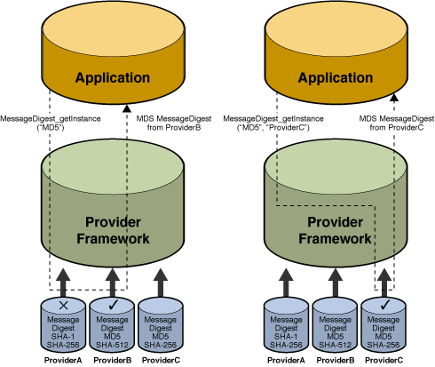
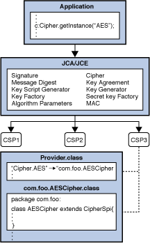

Provider.Service
Classjava.security
Properties FileThe Java platform defines a set of APIs spanning major security areas, including cryptography, public key infrastructure, authentication, secure communication, and access control. These APIs allow developers to easily integrate security into their application code. They were designed around the following principles:
Implementation independence
Applications do not need to implement security themselves. Rather, they can request security services from the Java platform. Security services are implemented in providers (see below), which are plugged into the Java platform via a standard interface. An application may rely on multiple independent providers for security functionality.
Implementation interoperability
Providers are interoperable across applications. Specifically, an application is not bound to a specific provider, and a provider is not bound to a specific application.
Algorithm extensibility
The Java platform includes a number of built-in providers that implement a basic set of security services that are widely used today. However, some applications may rely on emerging standards not yet implemented, or on proprietary services. The Java platform supports the installation of custom providers that implement such services.
A Cryptographic Service Provider (provider) refers to a package (or a set of packages) that supply a concrete implementation of a subset of the cryptography aspects of the JDK Security API.
The java.security.Provider class encapsulates the
notion of a security provider in the Java platform. It specifies
the provider's name and lists the security services it implements.
Multiple providers may be configured at the same time, and are
listed in order of preference. When a security service is
requested, the highest priority provider that implements that
service is selected.
The following figure illustrate these options for requesting an MD5 message digest implementation. The figure consists of two diagrams, both of which show three providers that implement message digest algorithms. The providers are ordered by preference from left to right (1-3). In the diagram to the left, an application requests an MD5 algorithm implementation without specifying a provider name. The providers are searched in preference order and the implementation from the first provider supplying that particular algorithm, ProviderB, is returned. In the diagram to the right, the application requests the MD5 algorithm implementation from a specific provider, ProviderC. This time the implementation from that provider is returned, even though a provider with a higher preference order, ProviderB, also supplies an MD5 implementation.
Description of Figure Options for Requesting an MD5 Message Digest Implementation
Each installation has one or more provider packages installed. Clients may configure their runtimes with different providers, and specify a preference order for each of them. The preference order is the order in which providers are searched for requested algorithms when no particular provider is requested.
The Oracle version of the Java runtime environment (JRE) comes standard with a default provider, named "SUN". Other Java runtime environments may not necessarily supply the "SUN" provider.
Programmers that only need to use the Java Security API to access existing cryptography algorithms and other services do not need to read this document.
This document is intended for experienced programmers wishing to create their own provider packages supplying cryptographic service implementations. It documents what you need to do in order to integrate your provider into Java so that your algorithms and other services can be found when Java Security API clients request them.
This document assumes you have already read the Java Cryptography Architecture Reference Guide.
It documents the packages which contain the various classes and interfaces in the Security API.
java.securityjava.security.spec
java.security.interfacesjavax.cryptojavax.crypto.spec
javax.crypto.interfacesjava.security,
javax.crypto, javax.crypto.spec, and
javax.crypto.interfaces.Throughout this document, the terms JCA by itself refers to the JCA framework. Whenever this document notes a specific JCA provider, it will be referred to explicitly by the provider name.
An engine class defines a cryptographic service in an abstract fashion (without a concrete implementation).
A cryptographic service is always associated with a particular algorithm or type. It either provides cryptographic operations (like those for digital signatures or message digests, ciphers or key agreement protocols); generates or supplies the cryptographic material (keys or parameters) required for cryptographic operations; or generates data objects (keystores or certificates) that encapsulate cryptographic keys (which can be used in a cryptographic operation) in a secure fashion.
For example, here are four engine classes:
Signature class provides access to the
functionality of a digital signature algorithm.KeyFactory class supplies a DSA private or
public key (from its encoding or transparent specification) in a
format usable by the initSign or initVerify methods, respectively,
of a DSA Signature object.Cipher class provides access to the
functionality of an encryption algorithm (such as DES)KeyAgreement class provides access to the
functionality of a key agreement protocol (such as
Diffie-Hellman)The Java Cryptography Architecture encompasses the classes comprising the Security package that relate to cryptography, including the engine classes. Users of the API request and utilize instances of the engine classes to carry out corresponding operations. The JDK defines the following engine classes:
MessageDigest - used to calculate the message
digest (hash) of specified data.Signature - used to sign data and verify digital
signatures.KeyPairGenerator - used to generate a pair of
public and private keys suitable for a specified algorithm.KeyFactory - used to convert opaque cryptographic
keys of type Key into key specifications
(transparent representations of the underlying key material), and
vice versa.KeyStore - used to create and manage a
keystore. A keystore is a database of keys. Private keys in
a keystore have a certificate chain associated with them, which
authenticates the corresponding public key. A keystore also
contains certificates from trusted entities.CertificateFactory - used to create public key
certificates and Certificate Revocation Lists (CRLs).AlgorithmParameters - used to manage the
parameters for a particular algorithm, including parameter encoding
and decoding.AlgorithmParameterGenerator - used to generate a
set of parameters suitable for a specified algorithm.SecureRandom - used to generate random or
pseudo-random numbers.Cipher: used to encrypt or decrypt some specified
data.KeyAgreement: used to execute a key agreement (key
exchange) protocol between 2 or more parties.KeyGenerator: used to generate a secret
(symmetric) key suitable for a specified algorithm.Mac: used to compute the message authentication
code of some specified data.SecretKeyFactory: used to convert opaque
cryptographic keys of type SecretKey into key
specifications (transparent representations of the underlying
key material), and vice versa.ExemptionMechanism: used to provide the
functionality of an exemption mechanism such as key
recovery, key weakening, key escrow, or any other
(custom) exemption mechanism. Applications or applets that use an
exemption mechanism may be granted stronger encryption capabilities
than those which don't. However, please note that cryptographic
restrictions are no longer required for most countries, and thus
exemption mechanisms may only be useful in those few countries
whose governments mandate restrictions.Note: A generator creates objects with brand-new contents, whereas a factory creates objects from existing material (for example, an encoding).
An engine class provides the interface to the
functionality of a specific type of cryptographic service
(independent of a particular cryptographic algorithm). It defines
Application Programming Interface (API) methods that allow
applications to access the specific type of cryptographic service
it provides. The actual implementations (from one or more
providers) are those for specific algorithms. For example, the
Signature engine class provides access to the functionality of a
digital signature algorithm. The actual implementation supplied in
a SignatureSpi subclass (see next paragraph) would be
that for a specific kind of signature algorithm, such as SHA1 with
DSA, SHA1 with RSA, or MD5 with RSA.
The application interfaces supplied by an engine class are implemented in terms of a Service Provider Interface (SPI). That is, for each engine class, there is a corresponding abstract SPI class, which defines the Service Provider Interface methods that cryptographic service providers must implement.
Description of Architecture of Service Provider Interface
An instance of an engine class, the "API object", encapsulates
(as a private field) an instance of the corresponding SPI class,
the "SPI object". All API methods of an API object are declared
"final", and their implementations invoke the corresponding SPI
methods of the encapsulated SPI object. An instance of an engine
class (and of its corresponding SPI class) is created by a call to
the getInstance factory method of the engine
class.
The name of each SPI class is the same as that of the corresponding engine class, followed by "Spi". For example, the SPI class corresponding to the Signature engine class is the SignatureSpi class.
Each SPI class is abstract. To supply the implementation of a particular type of service and for a specific algorithm, a provider must subclass the corresponding SPI class and provide implementations for all the abstract methods.
Another example of an engine class is the MessageDigest class, which provides access to a message digest algorithm. Its implementations, in MessageDigestSpi subclasses, may be those of various message digest algorithms such as SHA-1, MD5, or MD2.
As a final example, the KeyFactory engine class supports the conversion from opaque keys to transparent key specifications, and vice versa. See Key Specification Interfaces and Classes Required by Key Factories for details. The actual implementation supplied in a KeyFactorySpi subclass would be that for a specific type of keys, e.g., DSA public and private keys.
Follow the steps below to implement a provider and integrate it into the JCA framework:
The first thing you need to do is to write the code that provides algorithm-specific implementations of the cryptographic services you want to support.
Note that your provider may supply implementations of cryptographic services already available in one or more of the security components of the JDK.
For cryptographic services not defined in JCA (For example; signatures and message digests), please refer to Java Cryptography Architecture Reference Guide.
For each cryptographic service you wish to implement, create a subclass of the appropriate SPI class. JCA defines the following engine classes:
SignatureSpiMessageDigestSpiKeyPairGeneratorSpiSecureRandomSpiAlgorithmParameterGeneratorSpiAlgorithmParametersSpiKeyFactorySpiCertificateFactorySpiKeyStoreSpiCipherSpiKeyAgreementSpiKeyGeneratorSpiMacSpiSecretKeyFactorySpiExemptionMechanismSpi(See Engine Classes and Corresponding SPI Classes in this document for information on the JCA and other cryptographic classes.)
In your subclass, you need to:
engine. See Further Implementation Details and
Requirements for additional information.Class object associated
with your subclass, and creates an instance of your subclass by
calling the newInstance method on that
Class object. newInstance requires your
subclass to have a public constructor without any parameters.When instantiating a provider's implementation (class) of a
Cipher, KeyAgreement, KeyGenerator, MAC or
SecretKey factory, the framework will determine the
provider's codebase (JAR file) and verify its signature. In this
way, JCA authenticates the provider and ensures that only providers
signed by a trusted entity can be plugged into JCA. Thus, one
requirement for encryption providers is that they must be signed,
as described in later steps.
In addition, each provider should perform self-integrity checking to ensure that the JAR file containing its code has not been manipulated in an attempt to invoke provider methods directly rather than through JCA. For further information, see How a Provider Can Do Self-Integrity Checking.
In order for provider classes to become unusable if instantiated by an application directly, bypassing JCA, providers should implement the following:
For providers that may be exported outside the U.S.,
CipherSpi implementations must include an
implementation of the engineGetKeySize method which,
given a Key, returns the key size. If there are
restrictions on available cryptographic strength specified in
jurisdiction policy files, each Cipher initialization
method calls engineGetKeySize and then compares the
result with the maximum allowable key size for the particular
location and circumstances of the applet or application being run.
If the key size is too large, the initialization method throws an
exception.
Additional optional features that providers may implement are
engineWrap and engineUnwrap
methods of CipherSpi. Wrapping a key enables secure
transfer of the key from one place to another. Information about
wrapping and unwrapping keys is provided in the Wrapping and Unwrapping Keys
section of the Java Cryptography Architecture Reference
Guide.Decide on a name for your provider. This is the name to be used by client applications to refer to your provider.
The third step is to create a subclass of the
java.security.Provider class.
Your subclass should be a final class, and its
constructor should
super, specifying the provider name (see
Step 2), version number, and a string of
information about the provider and algorithms it supports. For
example:
super("CryptoX", 1.0, "CryptoX provider v1.0, implementing " +
"RSA encryption and key pair generation, and DES encryption.");
The list below shows the various types of JCA services, where the actual algorithm name is substitued for algName:
Signature.algNameMessageDigest.algNameKeyPairGenerator.algNameSecureRandom.algNameAlgorithmParameterGenerator.algNameAlgorithmParameters.algNameKeyFactory.algNameCertificateFactory.algNameKeyStore.algNameCipher.algNameKeyAgreement.algNameKeyGenerator.algNameMac.algNameSecretKeyFactory.algNameExemptionMechanism.algNameIn all of these except ExemptionMechanism and
Cipher, algName, certType , or
storeType is the "standard" name of the algorithm,
certificate type, or keystore type. See Appendix A of the Java Cryptography
Architecture Reference Guide for the standard names that should
be used.)
In the case of ExemptionMechanism, algName
refers to the name of the exemption mechanism, which can be one of
the following: KeyRecovery, KeyEscrow, or
KeyWeakening. Case does not matter.
In the case of Cipher, algName may actually
represent a transformation, and may be composed of an
algorithm name, a particular mode, and a padding scheme. See
Appendix A of the Java
Cryptography Architecture Reference Guide for details.
The value of each property must be the fully qualified name of the class implementing the specified algorithm, certificate type, or keystore type. That is, it must be the package name followed by the class name, where the two are separated by a period.
As an example, the default provider named SUN implements
the Digital Signature Algorithm (whose standard name is
SHA1withDSA) in a class named DSA in the
sun.security.provider package. Its subclass of
Provider (which is the Sun class in the
sun.security.provider package) sets the
Signature.SHA1withDSA property to have the value
sun.security.provider.DSA via the following:
put("Signature.SHA1withDSA", "sun.security.provider.DSA")
The list below shows more properties that can be defined for the various types of services, where the actual algorithm name is substitued for algName, certificate type for certType, keystore type for storeType, and attribute name for attrName:
Signature.algName [one or more spaces]
attrNameMessageDigest.algName [one or more spaces]
attrNameKeyPairGenerator.algName [one or more spaces]
attrNameSecureRandom.algName [one or more spaces]
attrNameKeyFactory.algName [one or more spaces]
attrNameCertificateFactory.certType [one or more spaces]
attrNameKeyStore.storeType [one or more spaces]
attrNameAlgorithmParameterGenerator.algName [one or more
spaces] attrNameAlgorithmParameters.algName [one or more spaces]
attrNameCipher.algName [one or more spaces]
attrNameKeyAgreement.algName [one or more spaces]
attrNameKeyGenerator.algName [one or more spaces]
attrNameMac.algName [one or more spaces]
attrNameSecretKeyFactory.algName [one or more spaces]
attrNameExemptionMechanism.algName [one or more spaces]
attrNameIn each of these, algName, certType, storeType, or
attrName is the "standard" name of the algorithm,
certificate type, keystore type, or attribute. (See Appendix A of
the Java Cryptography Architecture Reference Guide for the standard
names that should be used.)
For a property in the above format, the value of the property must be the value for the corresponding attribute. (See Appendix A of the Java Cryptography Architecture API Specification & Reference for the definition of each standard attribute.)
As an example, the default provider named "SUN" implements the
SHA1withDSA Digital Signature Algorithm in software.
In the master class for the provider "SUN", it sets the
Signature.SHA1withDSA ImplementedIn to have the value
Software via the following:
put("Signature.SHA1withDSA ImplementedIn", "Software")
For further master class property setting examples, see Appendix A to view the current Sun.java source file or Appendix B to see the SunJCE provider. These files show how the Sun and SunJCE providers set properties.
As mentioned above, in the case of a Cipher
property, algName may actually represent a
transformation. A transformation is a string that
describes the operation (or set of operations) to be performed by a
Cipher object on some given input. A transformation
always includes the name of a cryptographic algorithm (e.g.,
DES), and may be followed by a mode and a padding
scheme.
A transformation is of the form:
(In the latter case, provider-specific default values for the mode and padding scheme are used). For example, the following is a valid transformation:
Cipher c = Cipher.getInstance("DES/CBC/PKCS5Padding");
When requesting a block cipher in stream cipher mode (for
example; DES in CFB or OFB
mode), a client may optionally specify the number of bits to be
processed at a time, by appending this number to the mode name as
shown in the following sample transformations:
Cipher c1 = Cipher.getInstance("DES/CFB8/NoPadding");
Cipher c2 = Cipher.getInstance("DES/OFB32/PKCS5Padding");
If a number does not follow a stream cipher mode, a provider-specific default is used. (For example, the SunJCE provider uses a default of 64 bits.)
A provider may supply a separate class for each combination of
algorithm/mode/padding. Alternatively, a provider may decide
to provide more generic classes representing sub-transformations
corresponding to algorithm or algorithm/mode or
algorithm//padding (note the double slashes); in this case
the requested mode and/or padding are set automatically by the
getInstance methods of Cipher, which
invoke the engineSetMode and
engineSetPadding methods of the provider's subclass of
CipherSpi.
That is, a Cipher property in a provider master
class may have one of the formats shown in the table below.
Cipher Property Format |
Description |
|---|---|
Cipher.algName |
A provider's subclass of CipherSpi
implements algName with pluggable mode and padding |
Cipher.algName/mode |
A provider's subclass of CipherSpi
implements algName in the specified mode, with
pluggable padding |
Cipher.algName//padding |
A provider's subclass of CipherSpi
implements algName with the specified padding, with
pluggable mode |
Cipher.algName/mode/padding |
A provider's subclass of CipherSpi
implements algName with the specified mode and
padding |
(See Appendix A of the Java Cryptography Architecture Reference Guide for the standard algorithm names, modes, and padding schemes that should be used.)
For example, a provider may supply a subclass of
CipherSpi that implements DES/ECB/PKCS5Padding,
one that implements DES/CBC/PKCS5Padding, one that
implements DES/CFB/PKCS5Padding, and yet another one that
implements DES/OFB/PKCS5Padding. That provider would have
the following Cipher properties in its master
class:
Cipher.DES/ECB/PKCS5PaddingCipher.DES/CBC/PKCS5PaddingCipher.DES/CFB/PKCS5PaddingCipher.DES/OFB/PKCS5PaddingAnother provider may implement a class for each of the above
modes (i.e., one class for ECB, one for CBC, one for
CFB, and one for OFB), one class for
PKCS5Padding, and a generic DES class that subclasses
from CipherSpi. That provider would have the following
Cipher properties in its master class:
Cipher.DESCipher.DES SupportedModes
Example: "ECB|CBC|CFB|OFB"Cipher.DES SupportedPaddings
Example: "NOPADDING|PKCS5Padding"The getInstance factory method of the
Cipher engine class follows these rules in order to
instantiate a provider's implementation of CipherSpi
for a transformation of the form "algorithm":
CipherSpi for the specified "algorithm".NoSuchAlgorithmException
exception.The getInstance factory method of the
Cipher engine class follows these rules in order to
instantiate a provider's implementation of CipherSpi
for a transformation of the form
"algorithm/mode/padding":
CipherSpi for the specified
"algorithm/mode/padding" transformation.CipherSpi for the sub-transformation
"algorithm/mode".engineSetPadding(padding) on the new
instance.CipherSpi for the sub-transformation
"algorithm//padding" (note the double slashes).engineSetMode(mode) on the new instance.CipherSpi for the sub-transformation
"algorithm".engineSetMode(mode) and
engineSetPadding(padding) on the new
instance.NoSuchAlgorithmException
exception.After you have created your implementation code (Step 1), given your provider a name (Step 2), and created the master class (Step 3), use the Java compiler to compile your files.
Place your provider code in a JAR file, in preparation for signing it in the next step. For more information on the jar tool, see jar (for Solaris, Linux, or Mac OS X) (for Microsoft Windows).
jar cvf <JAR file name> <list of classes, separated by spaces>
This command creates a JAR file with the specified name containing the specified classes.
If your provider is supplying encryption algorithms through the
Cipher KeyAgreement,
KeyGenerator, Mac, or SecretKeyFactory classes,
you will need to sign your JAR file so that the JCA can
authenticate the code at runtime. For details, see Step 1a. If you are NOT providing an
implementation of this type you can skip this step.
The next step is to request a code-signing certificate so that you can use it to sign your provider prior to testing. The certificate will be good for both testing and production. It will be valid for 5 years.
Below are the steps you should use to get a code-signing certificate. For more information on the keytool tool, see keytool (for Solaris, Linux, or Mac OS X) (for Microsoft Windows).
keytool -genkeypair -alias <alias> \
-keyalg DSA -keysize 1024 \
-dname "cn=<Company Name>, \
ou=Java Software Code Signing,\
o=Sun Microsystems Inc" \
-keystore <keystore file name>\
-storepass <keystore password>
This will generate a DSA keypair (a public key and an associated private key) and store it in an entry in the specified keystore. The public key is stored in a self-signed certificate. The keystore entry can subsequently be accessed using the specified alias.
The option values in angle brackets ("<" and ">")
represent the actual values that must be supplied. For example,
<alias> must be replaced with whatever alias
name you wish to be used to refer to the newly-generated keystore
entry in the future, and <keystore file name>
must be replaced with the name of the keystore to be used.
Note: Do not surround actual values with angle brackets. For
example, if you want your alias to be myTestAlias,
specify the -alias option as follows:
-alias myTestAlias
If you specify a keystore that doesn't yet exist, it will be
created.Note: If command lines you type are not allowed to be as
long as the keytool -genkeypair command you want to
execute (for example, if you are typing to a Microsoft Windows DOS
prompt), you can create and execute a plain-text batch file
containing the command. That is, create a new text file that
contains nothing but the full keytool -genkeypair
command. (Remember to type it all on one line.) Save the file with
a .bat extension. Then in your DOS window, type the file name (with
its path, if necessary). This will cause the command in the batch
file to be executed.
keytool -certreq -alias <alias> \
-file <csr file name> \
-keystore <keystore file name> \
-storepass <keystore password>
Here, <alias> is the alias for the DSA
keypair entry created in the previous step. This command generates
a Certificate Signing Request (CSR), using the PKCS#10 format. It
stores the CSR in the file whose name is specified in
<csr file name>.
keytool -import -alias <alias for the CA cert> \
-file <CA cert file name> \
-keystore <keystore file name> \
-storepass <keystore password>
Then import the code-signing certificate:
keytool -import -alias <alias> \
-file <code-signing cert file name> \
-keystore <keystore file name> \
-storepass <keystore password>
Here, <alias> is the same alias as that
which you created in step 1 where you generated a DSA keypair. This
command replaces the self-signed certificate in the keystore entry
specified by <alias> with the one signed
by the JCA Code Signing Certification Authority.Now that you have in your keystore a certificate from an entity trusted by JCA (the JCA Code Signing Certification Authority), you can place your provider code in a JAR file (Step 5) and then use that certificate to sign the JAR file (Step 6.2).
Sign the JAR file created in step five with the code-signing certificate obtained in Step 6. For more information on the jarsigner tool, see jarsigner (for Solaris, Linux, or Mac OS X) (for Microsoft Windows).
jarsigner -keystore <keystore file name> \
-storepass <keystore password> \
<JAR file name> <alias>
Here, <alias> is the alias into the keystore
for the entry containing the code-signing certificate received from
the JCA Code Signing Certification Authority (the same alias as
that specified in the commands in Step
6.1).
You can test verification of the signature via the following:
jarsigner -verify <JAR file name>
The text "jar verified" will be displayed if the verification was successful.
Note: If you bundle a signed JCE provider as part of an RIA (applet or webstart application), for the best user experience, you should apply a second signature to the JCE provider JAR with the same certificate/key that you used to sign the applet or webstart application. See the Java Platform, Standard Edition Deployment Guide for more information on deploying RIAs, and the jarsigner (Solaris, Linux, or Mac OS X or Windows) man page for information on applying multiple signatures to a JAR file.
The next steps describe how to install and configure your new provider so that it is available via the JCA.
In order to prepare for testing your provider, you must install it in the same manner as will be done by clients wishing to use it. The installation enables Java Security to find your algorithm implementations when clients request them.
Installing a provider is done in two steps: installing the provider package classes, and configuring the provider.
The first thing you must do is make your classes available so that they can be found when requested. You ship your provider classes as a JAR (Java ARchive) file.
There are a two possible ways to install provider classes:
The provider JAR file will be considered an installed extension if it is placed in the standard place for the JAR files of an installed extension:
<java-home>/lib/ext<java-home>\lib\extHere <java-home> refers to the directory where
the runtime software is installed, which is the top-level directory
of the Java Runtime Environment (JRE) or the jre
directory in the Java SE (JDK) software. For example, if you
have the JDK installed on Solaris, Linux, or Mac OS X in a directory named
/home/user1/jdk, or on Microsoft Windows in a
directory named C:\jdk, then you need to install
the JAR file in the following directory:
/home/user1/jdk/jre/lib/extC:\jdk\jre\lib\extSimilarly, if you have the JRE installed on Solaris, Linux,
or Mac OS X in a directory named /home/user1/jre,
or on Microsoft Windows in
a directory named C:\jre, you need to install the
JAR file in the following directory:
/home/user1/jre/lib/extC:\jre\lib\extFor more information on installed extensions, see Installed Extensions.
For more information on bundled extensions, see Bundled Extensions.
The next step is to add the provider to your list of approved providers. This is done statically by editing the security properties file
<java-home>/lib/security/java.security<java-home>\lib\security\java.securityHere <java-home> refers to the directory where
the JRE was installed. For example, if you have the JDK installed on
Solaris, Linux, or Mac OS X in a directory named
/home/user1/jdk, or
on Microsoft Windows in a directory named C:\jdk,
then you need to edit the following file:
/home/user1/jdk/jre/lib/security/java.securityC:\jdk\jre\lib\security\java.securitySimilarly, if you have the JRE installed on Solaris, Linux, or Mac OS X in a
directory named /home/user1/jre, or on Windows in
a directory named C:\jre, then you need to edit
this file:
/home/user1/jre/lib/security/java.securityC:\jre\lib\security\java.securityFor each provider, this file should have a statement of the following form:
security.provider.n=masterClassName
This declares a provider, and specifies its preference order n. The preference order is the order in which providers are searched for requested algorithms when no specific provider is requested. The order is 1-based; 1 is the most preferred, followed by 2, and so on.
masterClassName must specify the fully qualified name of the provider's "master class", which you implemented in Step 3. This class is always a subclass of the Provider class.
security.provider.2=sun.security.provider.Sun
security.provider.3=sun.security.rsa.SunRsaSign
security.provider.4=sun.security.provider.SunJCE
(The Sun provider's master class is the Sun
class in the sun.security.provider package.)
The JCA provider SunJCE and other security-related providers shipped with the Java platform are also automatically configured as static providers.
To utilize another JCA provider, add a line registering the alternate provider, giving it a lower preference order than the SUN and SunRsaSign providers.
Suppose that your master class is the CryptoX class
in the com.cryptox.provider package, and that you
would like to make your provider the fourth preferred provider. To
do so, edit the java.security file as seen below:
security.provider.2=sun.security.provider.Sun
security.provider.3=sun.security.rsa.SunRsaSign
security.provider.4=com.cryptox.provider.CryptoX
security.provider.5=sun.security.provider.SunJCE
Note: Providers may also be registered dynamically. To do
so, a program (such as your test program, to be written in Step 8) can call either the addProvider
or insertProviderAt method in the
Security class. This type of registration is not
persistent and can only be done by code which is granted the
following permission:
java.security.SecurityPermission "insertProvider.{name}"
where {name} is replaced by the actual provider
name.
For example, if the provider name is "MyJCE" and if the
provider's code is in the myjce_provider.jar file in
the /localWork directory, then here is a sample policy
file grant statement granting that permission:
grant codeBase "file:/localWork/myjce_provider.jar" {
permission java.security.SecurityPermission
"insertProvider.MyJCE";
};
Whenever providers are not installed extensions, permissions must be granted for when applets or applications are run while a security manager is installed. There is typically a security manager installed whenever an applet is running, and a security manager may be installed for an application either via code in the application itself or via a command-line argument. Permissions do not need to be granted to installed extensions, since the default system policy file grants all permissions to installed extensions.
Whenever a client does not install your provider as an installed extension, your provider may need the following permissions granted to it in the client environment:
java.lang.RuntimePermission to get class
protection domains. The provider may need to get its own protection
domain in the process of doing self-integrity checking.java.security.SecurityPermission to set provider
properties.To ensure your provider works when a security manager is
installed and the provider is not an installed extension, you need
to test such an installation and execution environment. In
addition, prior to testing you need to grant appropriate
permissions to your provider and to any other providers it uses.
For example, a sample statement granting permissions to a provider
whose name is "MyJCE" and whose code is in
myjce_provider.jar appears below. Such a statement
could appear in a policy file. In this example, the
myjce_provider.jar file is assumed to be in the
/localWork directory.
grant codeBase "file:/localWork/myjce_provider.jar" {
permission java.lang.RuntimePermission "getProtectionDomain";
permission java.security.SecurityPermission
"putProviderProperty.MyJCE";
};
Write and compile one or more test programs that test your provider's incorporation into the Security API as well as the correctness of its algorithm(s). Create any supporting files needed, such as those for test data to be encrypted.
The first tests your program should perform are ones to ensure
that your provider is found, and that its name, version number, and
additional information is as expected. To do so, you could write
code like the following, substituting your provider name for
MyPro:
import java.security.*;
Provider p = Security.getProvider("MyPro");
System.out.println("MyPro provider name is " + p.getName());
System.out.println("MyPro provider version # is " + p.getVersion());
System.out.println("MyPro provider info is " + p.getInfo());
Next, you should ensure that your services are found. For instance, if you implemented the DES encryption algorithm, you could check to ensure it's found when requested by using the following code (again substituting your provider name for "MyPro"):
Cipher c = Cipher.getInstance("DES", "MyPro");
System.out.println("My Cipher algorithm name is " + c.getAlgorithm());
If you don't specify a provider name in the call to
getInstance, all registered providers will be
searched, in preference order (see Configuring the Provider), until one
implementing the algorithm is found.
If your provider implements an exemption mechanism, you should write a test applet or application that uses the exemption mechanism. Such an applet/application also needs to be signed, and needs to have a "permission policy file" bundled with it. See How to Make Applications "Exempt" from Cryptographic Restrictions in the Java Cryptography Architecture Reference Guide for complete information on creating and testing such an application.
Run your test program(s). Debug your code and continue testing as needed. If the Java Security API cannot seem to find one of your algorithms, review the steps above and ensure they are all completed.
Be sure to include testing of your programs using different installation options (e.g. making the provider an installed extension or placing it on the class path) and execution environments (with or without a security manager running). Installation options are discussed in Step 7.1. In particular, you need to ensure your provider works when a security manager is installed and the provider is not an installed extension -- and thus the provider must have permissions granted to it; therefore, you need to test such an installation and execution environment, after granting required permissions to your provider and to any other providers it uses, as described in Step 7.2.
If you find during testing that your code needs modification, make the changes, recompile (Step 4), place the updated provider code in a JAR file (Step 6), sign the JAR file if necessary (Step 6.2), re-install the provider (Step 7.1), if needed fix or add to the permissions (Step 7.2), and then re-test your programs. Repeat these steps as needed.
All U.S. vendors whose providers may be exported outside the U.S. should apply to the Bureau of Industry and Security in the U.S. Department of Commerce for export approval. Please consult your export counsel for more information.
Note: If your provider calls
Cipher.getInstance() and the returned
Cipher object needs to perform strong cryptography
regardless of what cryptographic strength is allowed by the user's
downloaded jurisdiction policy files, you should include a copy of
the cryptoPerms permission policy file which you
intend to bundle in the JAR file for your provider and which
specifies an appropriate permission for the required cryptographic
strength. The necessity for this file is just like the requirement
that applets and applications "exempt" from cryptographic
restrictions must include a cryptoPerms permission
policy file in their JAR file. For more information on the creation
and inclusion of such a file, see How to Make Applications "Exempt" from
Cryptographic Restrictions in the Java Cryptography
Architecture Reference Guide.
Here are two URLs that may be useful:
The next step is to write documentation for your clients. At the minimum, you need to specify:
In addition, your documentation should specify anything else of interest to clients, such as any default algorithm parameters.
For each Message Digest and MAC algorithm, indicate whether or
not your implementation is cloneable. This is not technically
necessary, but it may save clients some time and coding by telling
them whether or not intermediate Message Digests or MACs may be
possible through cloning. Clients who do not know whether or not a
MessageDigest or Mac implementation is
cloneable can find out by attempting to clone the object and
catching the potential exception, as illustrated by the following
example:
try {
// try and clone it
/* compute the MAC for i1 */
mac.update(i1);
byte[] i1Mac = mac.clone().doFinal();
/* compute the MAC for i1 and i2 */
mac.update(i2);
byte[] i12Mac = mac.clone().doFinal();
/* compute the MAC for i1, i2 and i3 */
mac.update(i3);
byte[] i123Mac = mac.doFinal();
} catch (CloneNotSupportedException cnse) {
// have to use an approach not involving cloning
}
where:
mac is the MAC object they received when they
requested one via a call to Mac.getInstance,i1, i2 and i3 are input
byte arrays, andi1i1 and i2i1, i2, and i3For a key pair generator algorithm, in case the client does not
explicitly initialize the key pair generator (via a call to an
initialize method), each provider must supply and
document a default initialization. For example, the Diffie-Hellman
key pair generator supplied by the SunJCE provider uses a
default prime modulus size (keysize) of 1024 bits.
A provider should document all the key specifications supported by its (secret-)key factory.
In case the client does not explicitly initialize the algorithm
parameter generator (via a call to an init method in
the AlgorithmParameterGenerator engine class), each
provider must supply and document a default initialization. For
example, the SunJCE provider uses a default prime modulus
size (keysize) of 1024 bits for the generation of
Diffie-Hellman parameters, the Sun provider a default
modulus prime size of 1024 bits for the generation of DSA
parameters.
If you implement a signature algorithm, you should document the
format in which the signature (generated by one of the
sign methods) is encoded. For example, the SHA1withDSA
signature algorithm supplied by the "SUN" provider encodes the
signature as a standard ASN.1 SEQUENCE of two
integers, r and s.
For a random number generation algorithm, provide information
regarding how "random" the numbers generated are, and the quality
of the seed when the random number generator is self-seeding. Also
note what happens when a SecureRandom object (and its encapsulated
SecureRandomSpi implementation object) is deserialized: If
subsequent calls to the nextBytes method (which
invokes the engineNextBytes method of the encapsulated
SecureRandomSpi object) of the restored object yield the exact same
(random) bytes as the original object would, then let users know
that if this behaviour is undesirable, they should seed the
restored random object by calling its setSeed
method.
A provider should document what types of certificates (and their version numbers, if relevant), can be created by the factory.
A provider should document any relevant information regarding the keystore implementation, such as its underlying data format.
After writing, configuring, testing, installing and documenting your provider software, make documentation available to your customers.
Each provider should do self-integrity checking to ensure that
the JAR file containing its code has not been tampered with, for
example in an attempt to invoke provider methods directly rather
than through JCA. Providers that provide implementations for
encryption services (Cipher, KeyAgreement, KeyGenerator,
MAC or SecretKey factory) must be digitally
signed and should be signed with a certificate issued by "trusted"
Certification Authorities. Currently, the following two
Certification Authorities are considered "trusted":
Please refer to Step 6.2 for detailed information on how to get a code-signing certificate from Sun Microsystems' JCA Code Signing CA and the certificate of that CA.
After getting the signing certificate from above Certification
Authority, provider packages should embed within themselves the
bytes for its own signing certificate, for example in an array like
the bytesOfProviderCert array referred to in the
Identifying Each of the Signers and
Determining If One is Trusted section below. At runtime, the
embedded certificate will be used in determining whether or not the
provider code is authentic.
The basic approach a provider can use to check its own integrity is:
Each of these steps is described in the following sections:
Note: The sample code MyJCE.java is a complete code
example that implements these steps. You can download this code for
your reference. The Notes on the Sample
Code section traces how these concepts are implemented in the
sample code.
IMPORTANT NOTE: In the unbundled version of JCE 1.2.x, (used with JDKs 1.2.x and 1.3.x), providers needed to include code to authenticate the JCA framework to assure themselves of the integrity and authenticity of the JCA that they plugged into. In JDK 6 and later, this is no longer necessary.
One implication is that a provider written just for JCE 1.2.2 will not work in JDK 6 because the provider's JCE framework authentication check will not work; the JCE framework code is no longer where the provider expects it to be. If you want your provider to work only with JDK 6, it should not have code to authenticate the JCE framework. On the other hand, if you want your provider to work both with JCE 1.2.2 and with JDK 6, then add a conditional statement. This way the provider code to authenticate the JCE framework is executed only when the provider is run with JCE 1.2.2. The following is sample code:
Class cipherCls = Class.forName("javax.crypto.Cipher");
CodeSource cs = cipherCls.getProtectionDomain().getCodeSource();
if (cs != null) {
// Authenticate JCE framework
. . .
}
The URL for the provider's JAR file can be obtained by
determining the provider's CodeSource and then calling
the getLocation method on the
CodeSource.
URL providerURL = (URL) AccessController.doPrivileged(
new PrivilegedAction) {
public Object run() {
CodeSource cs =
MyJCE.class.getProtectionDomain().getCodeSource();
return cs.getLocation();
}
});
Once you have the URL for the provider's JAR file, you can
create a java.util.jar.JarFile referring to the JAR
file. This instance is needed in the step for verifying the Provider JAR file.
To create the JAR file, first open a connection to the specified
URL by calling its openConnection method. Since the
URL is a JAR URL, the type is
java.net.JarURLConnection. Here's the basic code:
// Prep the url with the appropriate protocol.
jarURL =
url.getProtocol().equalsIgnoreCase("jar") ? url :
new URL("jar:" + url.toString() + "!/");
// Retrieve the jar file using JarURLConnection
JarFile jf = (JarFile) AccessController.doPrivileged(
new PrivilegedExceptionAction() {
public Object run() throws Exception {
JarURLConnection conn =
(JarURLConnection) jarURL.openConnection();
...
Now that you have a JarURLConnection, you can call
its getJarFile method to get the JAR file:
// Always get a fresh copy, so we don't have to
// worry about the stale file handle when the
// cached jar is closed by some other application.
conn.setUseCaches(false);
jf = conn.getJarFile();
Once you have determined the URL for your provider JAR file and
you have created a JarFile referring to the JAR file,
as shown in the steps above, you can then verify the file.
The basic approach is:
Sample code for each of these steps is presented and described in the following sections:
Our approach is to define a class JarVerifier to
handle the retrieval of a JAR file from a given URL and verify
whether the JAR file is signed with the specified certificate.
The constructor of JarVerifier takes the provider
URL as a parameter which will be used to retrieve the JAR file
later.
The actual jar verification is implemented in the
verify method which takes the provider code signing
certificate as a parameter.
public void verify(X509Certificate targetCert) throws IOException {
// variable 'jarFile' is a JarFile object created
// from the provider's Jar URL.
...
Vector entriesVec = new Vector();
Basically the verify method will go through the JAR
file entries twice: the first time checking the signature on each
entry and the second time verifying the signer is trusted.
Note: In our code snippets the jarFile
variable is the JarFile object of the provider's jar
file.
An authentic provider JAR file is signed. So the JAR file has been tampered with if it isn't signed:
// Ensure the jar file is signed.
Manifest man = jarFile.getManifest();
if (man == null) {
throw new SecurityException("The provider is not signed");
}
The next step is to go through all the entries in the JAR file
and ensure the signature on each one verifies correctly. One
possible way to verify the signature on a JAR file entry is to
simply read the file. If a JAR file is signed, the
read method itself automatically performs the
signature verification. Here is sample code:
// Ensure all the entries' signatures verify correctly
byte[] buffer = new byte[8192];
Enumeration entries = jarFile.entries();
while (entries.hasMoreElements()) {
JarEntry je = (JarEntry) entries.nextElement();
// Skip directories.
if (je.isDirectory())
continue;
entriesVec.addElement(je);
InputStream is = jarFile.getInputStream(je);
// Read in each jar entry. A security exception will
// be thrown if a signature/digest check fails.
int n;
while ((n = is.read(buffer, 0, buffer.length)) != -1) {
// Don't care
}
is.close();
}
The code in the previous section verified the signatures of all
the provider JAR file entries. The fact that they all verify
correctly is a requirement, but it is not sufficient to verify the
authenticity of the JAR file. A final requirement is that the
signatures were generated by the same entity as the one that
developed this provider. To test that the signatures are trusted,
we can again go through each entry in the JAR file (this time using
the entriesVec built in the previous step), and for
each entry that must be signed (that is, each entry that is not a
directory and that is not in the META-INF directory):
The loop setup is the following:
Enumeration e = entriesVec.elements();
while (e.hasMoreElements()) {
JarEntry je = (JarEntry) e.nextElement();
...
}
The certificates for the signers of a JAR file entry
JarEntry can be obtained simply by calling the
JarEntry getCertificates method:
Certificate[] certs = je.getCertificates();
Adding this line of code to the previous loop setup code, and adding code to ignore directories and files in the META-INF directory gives us:
while (e.hasMoreElements()) {
JarEntry je = (JarEntry) e.nextElement();
// Every file must be signed except files in META-INF.
Certificate[] certs = je.getCertificates();
if ((certs == null) || (certs.length == 0)) {
if (!je.getName().startsWith("META-INF"))
throw new SecurityException(
"The provider has unsigned class files.");
} else {
// Check whether the file is signed by the expected
// signer. The jar may be signed by multiple signers.
// See if one of the signers is 'targetCert'.
...
}
...
The certificate array returned by the JarEntry
getCertificates method contains one or more
certificate chains. There is one chain per signer of the
entry. Each chain contains one or more certificates. Each
certificate in a chain authenticates the public key in the previous
certificate.
The first certificate in a chain is the signer's certificate which contains the public key corresponding to the private key actually used to sign the entry. Each subsequent certificate is a certificate for the issuer of the previous certificate. Since the self-integrity check is based on whether the JAR file is signed with the provider's signing cert, the trust decision will be made upon only the first certificate, the signer's certificate.
We need to go through the array of certificate chains and check each chain and the associated signers until we find a trusted entity. For each JAR file entry, at least one of the signers must be trusted. A signer is considered "trusted" if and only if its certificate is equals to the embedded provider signing certificate.
The following sample code loops through all the certificate
chains, compares the first certificate in a chain to the embedded
provider signing certificate, and only returns true if
a match is found.
int startIndex = 0;
X509Certificate[] certChain;
boolean signedAsExpected = false;
while ((certChain = getAChain(certs, startIndex)) != null) {
if (certChain[0].equals(targetCert)) {
// Stop since one trusted signer is found.
signedAsExpected = true;
break;
}
// Proceed to the next chain.
startIndex += certChain.length;
}
if (!signedAsExpected) {
throw new SecurityException(
"The provider is not signed by a trusted signer");
}
The getAChain method is defined as follows:
/**
* Extracts ONE certificate chain from the specified certificate array
* which may contain multiple certificate chains, starting from index
* 'startIndex'.
*/
private static X509Certificate[] getAChain(
Certificate[] certs, int startIndex) {
if (startIndex > certs.length - 1)
return null;
int i;
// Keep going until the next certificate is not the
// issuer of this certificate.
for (i = startIndex; i < certs.length - 1; i++) {
if (!((X509Certificate)certs[i + 1]).getSubjectDN().
equals(((X509Certificate)certs[i]).getIssuerDN())) {
break;
}
}
// Construct and return the found certificate chain.
int certChainSize = (i-startIndex) + 1;
X509Certificate[] ret = new X509Certificate[certChainSize];
for (int j = 0; j < certChainSize; j++ ) {
ret[j] = (X509Certificate) certs[startIndex + j];
}
return ret;
}
The sample code, MyJCE.java, is a sample
provider which has a method selfIntegrityChecking
which performs self-integrity checking. It first determines the URL
of its own provider JAR file and then verifies that the provider
JAR file is signed with the embedded code-signing certificate.
Note: The method selfIntegrityChecking
should be called by all the constructors of its cryptographic
engine classes to ensure that its integrity is not compromised.
Provider MyJCE performs self-integrity checking in
the following steps:
MyJCE.class.JarVerifier object with the provider
URL in Step 1.X509Certificate object from the embedded
byte array bytesOfProviderCert.JarVerifier.verify method to verify all
entries in the provider JAR file are signed and are signed with the
same certificate instantiated in Step 3.Note: The class JarVerifier will retrieve
the JAR file from the given URL, make sure the JAR file is signed,
all entries have valid signatures, and that entries are signed with
the specified X509Certificate.
A security exception is thrown by
JarVerifier.verify in several cases:
verify is null
(invalid).The MyJCE.java sample code
is comprised of the code snippets shown above. In addition, it
includes error handling, sample code signing certificate bytes, and
code for instantiating a X509Certificate object from
the embedded sample code signing certificate bytes.
Regarding the use of AccessController.doPrivileged,
please see API For Privileged
Blocks for information on the use of
doPrivileged.
For many cryptographic algorithms and types, there is a single official "standard name" defined in Appendix A of the Java Cryptography Architecture Reference Guide.
For example, "MD5" is the standard name for the RSA-MD5 Message
Digest algorithm defined by RSA DSI in RFC 1321.
DiffieHellman is the standard for the Diffie-Hellman
key agreement algorithm defined in PKCS3.
In the JDK, there is an aliasing scheme that enables clients to
use aliases when referring to algorithms or types, rather than
their standard names. For example, the "SUN" provider's master
class (Sun.java) defines the alias "SHA1/DSA" for the
algorithm whose standard name is "SHA1withDSA". Thus, the following
statements are equivalent:
Signature sig = Signature.getInstance("SHA1withDSA", "SUN");
Signature sig = Signature.getInstance("SHA1/DSA", "SUN");
Aliases can be defined in your "master class" (see Step 3). To define an alias, create a property named
Alg.Alias.engineClassName.aliasName
where engineClassName is the name of an engine class
(e.g., Signature), and aliasName is your alias
name. The value of the property must be the standard
algorithm (or type) name for the algorithm (or type) being
aliased.
As an example, the "SUN" provider defines the alias "SHA1/DSA"
for the signature algorithm whose standard name is "SHA1withDSA" by
setting a property named Alg.Alias.Signature.SHA1/DSA
to have the value SHA1withDSA via the following:
put("Alg.Alias.Signature.SHA1/DSA", "SHA1withDSA");
Note that aliases defined by one provider are available only to
that provider and not to any other providers. Thus, aliases defined
by the SunJCE provider are available only to the
SunJCE provider.
Some algorithms require the use of other types of algorithms. For example, a PBE algorithm usually needs to use a message digest algorithm in order to transform a password into a key.
If you are implementing one type of algorithm that requires another, you can do one of the following:
MessageDigest.getInstance("MD5", "SUN")
MessageDigest.getInstance("MD5")
This is only appropriate if you are sure that there will be at
least one implementation of the requested algorithm (in this case,
MD5) installed on each Java platform where your provider will be
used.Here are some common types of algorithm interdependencies:
A signature algorithm often requires use of a message digest algorithm. For example, the SHA1withDSA signature algorithm requires the SHA-1 message digest algorithm.
A signature algorithm often requires use of a (pseudo-)random number generation algorithm. For example, such an algorithm is required in order to generate a DSA signature.
A key pair generation algorithm often requires use of a message digest algorithm. For example, DSA keys are generated using the SHA-1 message digest algorithm.
An algorithm parameter generator often requires use of a message digest algorithm. For example, DSA parameters are generated using the SHA-1 message digest algorithm.
A keystore implementation will often utilize a message digest
algorithm to compute keyed hashes (where the key is a
user-provided password) to check the integrity of a keystore and
make sure that the keystore has not been tampered with.
A key pair generation algorithm sometimes needs to generate a new set of algorithm parameters. It can either generate the parameters directly, or use an algorithm parameter generator.
A key pair generation algorithm may require a source of
randomness in order to generate a new key pair and possibly a new
set of parameters associated with the keys. That source of
randomness is represented by a SecureRandom object.
The implementation of the key pair generation algorithm may
generate the key parameters itself, or may use an algorithm
parameter generator to generate them, in which case it may or may
not initialize the algorithm parameter generator with a source of
randomness.
An algorithm parameter generator's
engineGenerateParameters method must return an
AlgorithmParameters instance.
If you are implementing a signature algorithm, your
implementation's engineInitSign and
engineInitVerify methods will require passed-in keys
that are valid for the underlying algorithm (e.g., DSA keys for the
DSS algorithm). You can do one of the following:
DSAPrivateKey and DSAPublicKey interfaces
from the package java.security.interfaces), and create
your own key pair generator and/or key factory returning keys of
those types. Require the keys passed to engineInitSign
and engineInitVerify to be the types of keys you have
implemented, that is, keys generated from your key pair generator
or key factory. Or you can,engineInitSign method
for a DSS Signature class could accept any private keys that are
instances of
java.security.interfaces.DSAPrivateKey.A keystore implementation will often utilize a key factory to parse the keys stored in the keystore, and a certificate factory to parse the certificates stored in the keystore.
In case the client does not explicitly initialize a key pair generator or an algorithm parameter generator, each provider of such a service must supply (and document) a default initialization. For example, the Sun provider uses a default modulus size (strength) of 1024 bits for the generation of DSA parameters, and the "SunJCE" provider uses a default modulus size (keysize) of 1024 bits for the generation of Diffie-Hellman parameters.
If you implement a key pair generator, your implementation should supply default parameters that are used when clients don't specify parameters. The documentation you supply (Step 11) should state what the default parameters are.
For example, the DSA key pair generator in the Sun
provider supplies a set of pre-computed p,
q, and g default values for the
generation of 512, 768, and 1024-bit key pairs. The following
p, q, and g values are used
as the default values for the generation of 1024-bit DSA key
pairs:
p = fd7f5381 1d751229 52df4a9c 2eece4e7 f611b752 3cef4400 c31e3f80
b6512669 455d4022 51fb593d 8d58fabf c5f5ba30 f6cb9b55 6cd7813b
801d346f f26660b7 6b9950a5 a49f9fe8 047b1022 c24fbba9 d7feb7c6
1bf83b57 e7c6a8a6 150f04fb 83f6d3c5 1ec30235 54135a16 9132f675
f3ae2b61 d72aeff2 2203199d d14801c7
q = 9760508f 15230bcc b292b982 a2eb840b f0581cf5
g = f7e1a085 d69b3dde cbbcab5c 36b857b9 7994afbb fa3aea82 f9574c0b
3d078267 5159578e bad4594f e6710710 8180b449 167123e8 4c281613
b7cf0932 8cc8a6e1 3c167a8b 547c8d28 e0a3ae1e 2bb3a675 916ea37f
0bfa2135 62f1fb62 7a01243b cca4f1be a8519089 a883dfe1 5ae59f06
928b665e 807b5525 64014c3b fecf492a
(The p and q values given here were
generated by the prime generation standard, using the 160-bit
SEED: 8d515589 4229d5e6 89ee01e6 018a237e 2cae64cd
With this seed, the algorithm found p and
q when the counter was at 92.)
Provider.Service ClassSince its introduction, security providers have published their
service information via appropriately formatted key-value String
pairs they put in their Hashtable entries. While this mechanism is
simple and convenient, it limits the amount customization possible.
As a result, JDK 5.0 introduced a second option, the
Provider.Service class. It offers an alternative way
for providers to advertise their services and supports additional
features as described below. Note that this addition is fully
compatible with the older method of using String valued Hashtable
entries. A provider on JDK 5.0 can choose either method as it
prefers, or even use both at the same time.
A Provider.Service object encapsulates all
information about a service. This is the provider that offers the
service, its type (e.g. MessageDigest or
Signature), the algorithm name, and the name of the
class that implements the service. Optionally, it also includes a
list of alternate algorithm names for this service (aliases) and
attributes, which are a map of (name, value) String pairs. In
addition, it defines the methods newInstance() and
supportsParameter(). They have default
implementations, but can be overridden by providers if needed, as
may be the case with providers that interface with hardware
security tokens.
The newInstance() method is used by the security
framework when it needs to construct new implementation instances.
The default implementation uses reflection to invoke the standard
constructor for the respective type of service. For all standard
services except CertStore, this is the no-args
constructor. The constructorParameter to
newInstance() must be null in theses cases. For
services of type CertStore, the constructor that takes
a CertStoreParameters object is invoked, and
constructorParameter must be a non-null instance of
CertStoreParameters. A security provider can override
the newInstance() method to implement instantiation as
appropriate for that implementation. It could use direct invocation
or call a constructor that passes additional information specific
to the Provider instance or token. For example, if multiple
Smartcard readers are present on the system, it might pass
information about which reader the newly created service is to be
associated with. However, despite customization all implementations
must follow the conventions about constructorParameter
described above.
The supportsParameter() tests whether the Service
can use the specified parameter. It returns false if this service
cannot use the parameter. It returns true if this service can use
the parameter, if a fast test is infeasible, or if the status is
unknown. It is used by the security framework with some types of
services to quickly exclude non-matching implementations from
consideration. It is currently only defined for the following
standard services: Signature, Cipher,
Mac, and KeyAgreement. The
parameter must be an instance of Key in these
cases. For example, for Signature services, the
framework tests whether the service can use the supplied Key before
instantiating the service. The default implementation examines the
attributes SupportedKeyFormats and
SupportedKeyClasses as described below. Again, a
provider may override this methods to implement additional
tests.
The SupportedKeyFormats attribute is a list of the
supported formats for encoded keys (as returned by
key.getFormat()) separated by the "|" (pipe) character.
For example, X.509|PKCS#8. The
SupportedKeyClasses attribute is a list of the names
of classes of interfaces separated by the "|" character. A key
object is considered to be acceptable if it is assignable to at
least one of those classes or interfaces named. In other words, if
the class of the key object is a subclass of one of the listed
classes (or the class itself) or if it implements the listed
interface. An example value is
"java.security.interfaces.RSAPrivateKey|java.security.interfaces.RSAPublicKey"
.
Four methods have been added to the Provider class for adding and looking up Services. As mentioned earlier, the implementation of those methods and also of the existing Properties methods have been specifically designed to ensure compatibility with existing Provider subclasses. This is achieved as follows:
If legacy Properties methods are used to add entries, the
Provider class makes sure that the property strings are parsed into
equivalent Service objects prior to lookup via
getService(). Similarly, if the putService()
method is used, equivalent property strings are placed into the
provider's hashtable at the same time. If a provider implementation
overrides any of the methods in the Provider class, it has to
ensure that its implementation does not interfere with this
conversion. To avoid problems, we recommend that implementations do
not override any of the methods in the Provider
class.
If you implement a signature algorithm, the documentation you
supply (Step 11) should specify the format in
which the signature (generated by one of the sign
methods) is encoded.
For example, the SHA1withDSA signature algorithm supplied
by the Sun provider encodes the signature as a standard
ASN.1 sequence of two ASN.1 INTEGER values:
r and s, in that order:
SEQUENCE ::= {
r INTEGER,
s INTEGER }
The Java Security API contains the following interfaces (in the
java.security.interfaces package) for the convenience
of programmers implementing DSA services:
The following sections discuss requirements for implementations of these interfaces.
DSAKeyPairGeneratorThe interface DSAKeyPairGenerator is obsolete. It used to be needed to enable
clients to provide DSA-specific parameters to be used rather than
the default parameters your implementation supplies. However, in
Java it is no longer necessary; a new KeyPairGenerator
initialize method that takes an
AlgorithmParameterSpec parameter enables clients to
indicate algorithm-specific parameters.
DSAParams
ImplementationIf you are implementing a DSA key pair generator, you need a
class implementing DSAParams for holding and returning
the p, q, and g
parameters.
A DSAParams implementation is also required if you
implement the DSAPrivateKey and
DSAPublicKey interfaces. DSAPublicKey and
DSAPrivateKey both extend the DSAKey interface, which
contains a getParams method that must return a
DSAParams object. See DSAPrivateKey and DSAPublicKey
Implementations for more information.
Note: there is a DSAParams implementation
built into the JDK: the
java.security.spec.DSAParameterSpec class.
DSAPrivateKey
and DSAPublicKey
ImplementationsIf you implement a DSA key pair generator or key factory, you
need to create classes implementing the DSAPrivateKey
and DSAPublicKey interfaces.
If you implement a DSA key pair generator, your
generateKeyPair method (in your
KeyPairGeneratorSpi subclass) will return instances of
your implementations of those interfaces.
If you implement a DSA key factory, your
engineGeneratePrivate method (in your
KeyFactorySpi subclass) will return an instance of
your DSAPrivateKey implementation, and your
engineGeneratePublic method will return an instance of
your DSAPublicKey implementation.
Also, your engineGetKeySpec and
engineTranslateKey methods will expect the passed-in
key to be an instance of a DSAPrivateKey or
DSAPublicKey implementation. The
getParams method provided by the interface
implementations is useful for obtaining and extracting the
parameters from the keys and then using the parameters, for example
as parameters to the DSAParameterSpec constructor
called to create a parameter specification from parameter values
that could be used to initialize a KeyPairGenerator
object for DSA.
If you implement a DSA signature algorithm, your
engineInitSign method (in your
SignatureSpi subclass) will expect to be passed a
DSAPrivateKey and your engineInitVerify
method will expect to be passed a DSAPublicKey.
Please note: The DSAPublicKey and
DSAPrivateKey interfaces define a very generic,
provider-independent interface to DSA public and private keys,
respectively. The engineGetKeySpec and
engineTranslateKey methods (in your
KeyFactorySpi subclass) could additionally check if
the passed-in key is actually an instance of their provider's own
implementation of DSAPrivateKey or
DSAPublicKey, e.g., to take advantage of
provider-specific implementation details. The same is true for the
DSA signature algorithm engineInitSign and
engineInitVerify methods (in your
SignatureSpi subclass).
To see what methods need to be implemented by classes that
implement the DSAPublicKey and
DSAPrivateKey interfaces, first note the following
interface signatures:
In the java.security.interfaces package:
public interface DSAPrivateKey extends DSAKey,
java.security.PrivateKey
public interface DSAPublicKey extends DSAKey,
java.security.PublicKey
public interface DSAKey
In the java.security package:
public interface PrivateKey extends Key public interface PublicKey extends Key public interface Key extends java.io.Serializable
In order to implement the DSAPrivateKey and
DSAPublicKey interfaces, you must implement the
methods they define as well as those defined by interfaces they
extend, directly or indirectly.
Thus, for private keys, you need to supply a class that implements
getX method from the
DSAPrivateKey interface.getParams method from the java.security.interfaces.DSAKey
interface, since DSAPrivateKey extends
DSAKey. Note: The getParams method
returns a DSAParams object, so you must also have a
DSAParams
implementation.getAlgorithm, getEncoded, and
getFormat methods from the java.security.Key
interface, since DSAPrivateKey extends
java.security.PrivateKey, and PrivateKey
extends Key.
Similarly, for public DSA keys, you need to supply a class that implements:
getY method from the DSAPublicKey
interface.getParams method from the java.security.interfaces.DSAKey
interface, since DSAPublicKey extends DSAKey. Note:
The getParams method returns a DSAParams
object, so you must also have a DSAParams implementation.getAlgorithm, getEncoded, and
getFormat methods from the java.security.Key
interface, since DSAPublicKey extends
java.security.PublicKey, and PublicKey
extends Key.The Java Security API contains the following interfaces (in the
java.security.interfaces package) for the convenience
of programmers implementing RSA services:
The following sections discuss requirements for implementations of these interfaces.
RSAPrivateKey, RSAPrivateCrtKey, and RSAPublicKey ImplementationsIf you implement an RSA key pair generator or key factory, you
need to create classes implementing the RSAPrivateKey
(and/or
RSAPrivateCrtKey) and
RSAPublicKey interfaces.
(RSAPrivateCrtKey is the interface to an RSA private
key, using the Chinese Remainder Theorem (CRT)
representation.)
If you implement an RSA key pair generator, your
generateKeyPair method (in your
KeyPairGeneratorSpi subclass) will return instances of
your implementations of those interfaces.
If you implement an RSA key factory, your
engineGeneratePrivate method (in your
KeyFactorySpi subclass) will return an instance of
your RSAPrivateKey (or RSAPrivateCrtKey)
implementation, and your engineGeneratePublic method
will return an instance of your RSAPublicKey
implementation.
Also, your engineGetKeySpec and
engineTranslateKey methods will expect the passed-in
key to be an instance of an RSAPrivateKey,
RSAPrivateCrtKey, or RSAPublicKey
implementation.
If you implement an RSA signature algorithm, your
engineInitSign method (in your
SignatureSpi subclass) will expect to be passed either
an RSAPrivateKey or an RSAPrivateCrtKey,
and your engineInitVerify method will expect to be
passed an RSAPublicKey.
Please note: The RSAPublicKey,
RSAPrivateKey, and RSAPrivateCrtKey
interfaces define a very generic, provider-independent interface to
RSA public and private keys. The engineGetKeySpec and
engineTranslateKey methods (in your
KeyFactorySpi subclass) could additionally check if
the passed-in key is actually an instance of their provider's own
implementation of RSAPrivateKey,
RSAPrivateCrtKey, or RSAPublicKey, e.g.,
to take advantage of provider-specific implementation details. The
same is true for the RSA signature algorithm
engineInitSign and engineInitVerify
methods (in your SignatureSpi subclass).
To see what methods need to be implemented by classes that
implement the RSAPublicKey,
RSAPrivateKey, and RSAPrivateCrtKey
interfaces, first note the following interface signatures:
In the java.security.interfaces package:
public interface RSAPrivateKey extends java.security.PrivateKey
public interface RSAPrivateCrtKey extends RSAPrivateKey
public interface RSAPublicKey extends java.security.PublicKey
In the java.security package:
public interface PrivateKey extends Key
public interface PublicKey extends Key
public interface Key extends java.io.Serializable
In order to implement the RSAPrivateKey,
RSAPrivateCrtKey, and RSAPublicKey
interfaces, you must implement the methods they define as well as
those defined by interfaces they extend, directly or
indirectly.
Thus, for RSA private keys, you need to supply a class that implements:
getModulus and getPrivateExponent
methods from the
RSAPrivateKey interface.getAlgorithm, getEncoded, and
getFormat methods from the java.security.Key
interface, since RSAPrivateKey extends
java.security.PrivateKey, and PrivateKey
extends Key.Similarly, for RSA private keys using the Chinese Remainder Theorem (CRT) representation, you need to supply a class that implements:
RSAPrivateCrtKey extends
java.security.interfaces.RSAPrivateKey.getPublicExponent, getPrimeP,
getPrimeQ, getPrimeExponentP,
getPrimeExponentQ, and getCrtCoefficient
methods from the
RSAPrivateKey interface.For public RSA keys, you need to supply a class that implements:
getModulus and getPublicExponent
methods from the RSAPublicKey
interface.getAlgorithm, getEncoded, and
getFormat methods from the java.security.Key
interface, since RSAPublicKey extends
java.security.PublicKey, and PublicKey
extends Key.JCA contains a number of AlgorithmParameterSpec
implementations for the most frequently used cipher and key
agreement algorithm parameters. If you are operating on algorithm
parameters that should be for a different type of algorithm not
provided by JCA, you will need to supply your own
AlgorithmParameterSpec implementation appropriate for
that type of algorithm.
JCA contains the following interfaces (in the
javax.crypto.interfaces package) for the convenience
of programmers implementing Diffie-Hellman services:
The following sections discuss requirements for implementations of these interfaces.
DHPrivateKey
and DHPublicKey ImplementationsIf you implement a Diffie-Hellman key pair generator or key
factory, you need to create classes implementing the
DHPrivateKey and DHPublicKey
interfaces.
If you implement a Diffie-Hellman key pair generator, your
generateKeyPair method (in your
KeyPairGeneratorSpi subclass) will return instances of
your implementations of those interfaces.
If you implement a Diffie-Hellman key factory, your
engineGeneratePrivate method (in your
KeyFactorySpi subclass) will return an instance of
your DHPrivateKey implementation, and your
engineGeneratePublic method will return an instance of
your DHPublicKey implementation.
Also, your engineGetKeySpec and
engineTranslateKey methods will expect the passed-in
key to be an instance of a DHPrivateKey or
DHPublicKey implementation. The getParams
method provided by the interface implementations is useful for
obtaining and extracting the parameters from the keys. You can then
use the parameters, for example, as parameters to the
DHParameterSpec constructor called to create a
parameter specification from parameter values used to initialize a
KeyPairGenerator object for Diffie-Hellman.
If you implement the Diffie-Hellman key agreement algorithm,
your engineInit method (in your
KeyAgreementSpi subclass) will expect to be passed a
DHPrivateKey and your engineDoPhase
method will expect to be passed a DHPublicKey.
Note: The DHPublicKey and
DHPrivateKey interfaces define a very generic,
provider-independent interface to Diffie-Hellman public and private
keys, respectively. The engineGetKeySpec and
engineTranslateKey methods (in your
KeyFactorySpi subclass) could additionally check if
the passed-in key is actually an instance of their provider's own
implementation of DHPrivateKey or
DHPublicKey, e.g., to take advantage of
provider-specific implementation details. The same is true for the
Diffie-Hellman algorithm engineInit and
engineDoPhase methods (in your
KeyAgreementSpi subclass).
To see what methods need to be implemented by classes that
implement the DHPublicKey and
DHPrivateKey interfaces, first note the following
interface signatures:
In the javax.crypto.interfaces package:
public interface DHPrivateKey extends DHKey, java.security.PrivateKey
public interface DHPublicKey extends DHKey, java.security.PublicKey
public interface DHKey
In the java.security package:
public interface PrivateKey extends Key
public interface PublicKey extends Key
public interface Key extends java.io.Serializable
To implement the DHPrivateKey and
DHPublicKey interfaces, you must implement the methods
they define as well as those defined by interfaces they extend,
directly or indirectly.
Thus, for private keys, you need to supply a class that implements:
getX method from the DHPrivateKey
interface.getParams method from the javax.crypto.interfaces.DHKey
interface, since DHPrivateKey extends
DHKey.getAlgorithm, getEncoded, and
getFormat methods from the java.security.Key
interface, since DHPrivateKey extends
java.security.PrivateKey, and PrivateKey
extends Key.Similarly, for public Diffie-Hellman keys, you need to supply a class that implements:
getY method from the DHPublicKey
interface.getParams method from the javax.crypto.interfaces.DHKey
interface, since DHPublicKey extends
DHKey.getAlgorithm, getEncoded, and
getFormat methods from the java.security.Key
interface, since DHPublicKey extends
java.security.PublicKey, and PublicKey
extends Key.As noted above, the Java Security API contains interfaces for the convenience of programmers implementing services like DSA, RSA and ECC. If there are services without API support, you need to define your own APIs.
If you are implementing a key pair generator for a different
algorithm, you should create an interface with one or more
initialize methods that clients can call when they
want to provide algorithm-specific parameters to be used rather
than the default parameters your implementation supplies. Your
subclass of KeyPairGeneratorSpi should implement this
interface.
For algorithms without direct API support, it is recommended
that you create similar interfaces and provide implementation
classes. Your public key interface should extend the PublicKey
interface. Similarly, your private key interface should extend the
PrivateKey
interface.
An algorithm parameter specification is a transparent representation of the sets of parameters used with an algorithm.
A transparent representation of parameters means that you
can access each value individually, through one of the get
methods defined in the corresponding specification class (e.g.,
DSAParameterSpec defines getP,
getQ, and getG methods, to access the p,
q, and g parameters, respectively).
This is contrasted with an opaque representation, as
supplied by the AlgorithmParameters engine class, in which you have
no direct access to the key material values; you can only get the
name of the algorithm associated with the parameter set (via
getAlgorithm) and some kind of encoding for the
parameter set (via getEncoded).
If you supply an AlgorithmParametersSpi,
AlgorithmParameterGeneratorSpi, or
KeyPairGeneratorSpi implementation, you must utilize
the AlgorithmParameterSpec interface, since each of
those classes contain methods that take an
AlgorithmParameterSpec parameter. Such methods need to
determine which actual implementation of that interface has been
passed in, and act accordingly.
JCA contains a number of AlgorithmParameterSpec
implementations for the most frequently used signature, cipher and
key agreement algorithm parameters. If you are operating on
algorithm parameters that should be for a different type of
algorithm not provided by JCA, you will need to supply your own
AlgorithmParameterSpec implementation appropriate for
that type of algorithm.
Java defines the following algorithm parameter specification
interfaces and classes in the java.security.spec and
javax.crypto.spec packages:
AlgorithmParameterSpec InterfaceAlgorithmParameterSpec is an interface to a
transparent specification of cryptographic parameters.
This interface contains no methods or constants. Its only purpose is to group (and provide type safety for) all parameter specifications. All parameter specifications must implement this interface.
DSAParameterSpec ClassThis class (which implements the
AlgorithmParameterSpec and DSAParams
interfaces) specifies the set of parameters used with the DSA
algorithm. It has the following methods:
public BigInteger getP()
public BigInteger getQ()
public BigInteger getG()
These methods return the DSA algorithm parameters: the prime
p, the sub-prime q, and the base
g.
Many types of DSA services will find this class useful - for
example, it is utilized by the DSA signature, key pair generator,
algorithm parameter generator, and algorithm parameters classes
implemented by the Sun provider. As a specific example, an
algorithm parameters implementation must include an implementation
for the getParameterSpec method, which returns an
AlgorithmParameterSpec. The DSA algorithm parameters
implementation supplied by Sun returns an instance of the
DSAParameterSpec class.
IvParameterSpec
ClassThis class (which implements the
AlgorithmParameterSpec interface) specifies the
initialization vector (IV) used with a cipher in feedback mode.
| Method | Description |
|---|---|
byte[] getIV() |
Returns the initialization vector (IV). |
OAEPParameterSpec
ClassThis class specifies the set of parameters used with OAEP Padding, as defined in the PKCS #1 standard.
| Method | Description |
|---|---|
String getDigestAlgorithm() |
Returns the message digest algorithm name. |
String getMGFAlgorithm() |
Returns the mask generation function algorithm name. |
AlgorithmParameterSpec getMGFParameters() |
Returns the parameters for the mask generation function. |
PSource getPSource() |
Returns the source of encoding input P. |
PBEParameterSpec
ClassThis class (which implements the
AlgorithmParameterSpec interface) specifies the set of
parameters used with a password-based encryption (PBE)
algorithm.
| Method | Description |
|---|---|
int getIterationCount() |
Returns the iteration count. |
byte[] getSalt() |
Returns the salt. |
RC2ParameterSpec
ClassThis class (which implements the
AlgorithmParameterSpec interface) specifies the set of
parameters used with the RC2 algorithm.
| Method | Description |
|---|---|
boolean equals(Object obj) |
Tests for equality between the specified object and this object. |
int getEffectiveKeyBits() |
Returns the effective key size in bits. |
byte[] getIV() |
Returns the IV or null if this parameter set does not contain an IV. |
int hashCode() |
Calculates a hash code value for the object. |
RC5ParameterSpec
ClassThis class (which implements the
AlgorithmParameterSpec interface) specifies the set of
parameters used with the RC5 algorithm.
| Method | Description |
|---|---|
boolean equals(Object obj) |
Tests for equality between the specified object and this object. |
byte[] getIV() |
Returns the IV or null if this parameter set does not contain an IV. |
int getRounds() |
Returns the number of rounds. |
int getVersion() |
Returns the version. |
int getWordSize() |
Returns the word size in bits. |
int hashCode() |
Calculates a hash code value for the object. |
DHParameterSpec
ClassThis class (which implements the
AlgorithmParameterSpec interface) specifies the set of
parameters used with the Diffie-Hellman algorithm.
| Method | Description |
|---|---|
BigInteger getG() |
Returns the base generator g. |
int getL() |
Returns the size in bits, l, of the random
exponent (private value). |
BigInteger getP() |
Returns the prime modulus p. |
Many types of Diffie-Hellman services will find this class
useful; for example, it is used by the Diffie-Hellman key
agreement, key pair generator, algorithm parameter generator, and
algorithm parameters classes implemented by the "SunJCE" provider.
As a specific example, an algorithm parameters implementation must
include an implementation for the getParameterSpec
method, which returns an AlgorithmParameterSpec. The
Diffie-Hellman algorithm parameters implementation supplied by
"SunJCE" returns an instance of the DHParameterSpec
class.
A key factory provides bi-directional conversions between opaque
keys (of type Key) and key specifications. If you
implement a key factory, you thus need to understand and utilize
key specifications. In some cases, you also need to implement your
own key specifications.
Further information about key specifications, the interfaces and classes supplied in Java, and key factory requirements with respect to specifications, is provided below.
Key specifications are transparent representations of the key material that constitutes a key. If the key is stored on a hardware device, its specification may contain information that helps identify the key on the device.
A transparent representation of keys means that you can
access each key material value individually, through one of the
get methods defined in the corresponding specification
class. For example,
java.security.spec.DSAPrivateKeySpec defines
getX, getP, getQ, and
getG methods, to access the private key
x, and the DSA algorithm parameters used to calculate
the key: the prime p, the sub-prime q,
and the base g.
This is contrasted with an opaque representation, as
defined by the Key interface, in which you have no direct access to
the parameter fields. In other words, an "opaque" representation
gives you limited access to the key - just the three methods
defined by the Key interface: getAlgorithm,
getFormat, and getEncoded.
A key may be specified in an algorithm-specific way, or in an
algorithm-independent encoding format (such as ASN.1). For example,
a DSA private key may be specified by its components
x, p,
q, and g (see DSAPrivateKeySpec), or it may
be specified using its DER encoding (see PKCS8EncodedKeySpec).
Java defines the following key specification interfaces and
classes in the java.security.spec and
javax.crypto.spec packages:
KeySpec
InterfaceThis interface contains no methods or constants. Its only purpose is to group (and provide type safety for) all key specifications. All key specifications must implement this interface.
Java supplies several classes implementing the
KeySpec interface: DSAPrivateKeySpec, DSAPublicKeySpec, RSAPrivateKeySpec, RSAPublicKeySpec, EncodedKeySpec, PKCS8EncodedKeySpec, and
X509EncodedKeySpec.
If your provider uses key types (e.g.,
Your_PublicKey_type and
Your_PrivateKey_type) for which the JDK does not
already provide corresponding KeySpec classes, there
are two possible scenarios, one of which requires that you
implement your own key specifications:
KeySpec classes for your key type.Your_PublicKey_type and
Your_PrivateKey_type keys through the appropriate
KeyPairGenerator supplied by your provider for that
key type. If they want to store the generated keys for later usage,
they retrieve the keys' encodings (using the
getEncoded method of the Key interface).
When they want to create an Your_PublicKey_type or
Your_PrivateKey_type key from the encoding (e.g., in
order to initialize a Signature object for signing or
verification), they create an instance of
X509EncodedKeySpec or PKCS8EncodedKeySpec
from the encoding, and feed it to the appropriate
KeyFactory supplied by your provider for that
algorithm, whose generatePublic and
generatePrivate methods will return the requested
PublicKey (an instance of
Your_PublicKey_type) or PrivateKey (an
instance of Your_PrivateKey_type) object,
respectively.KeySpec classes (classes that implement the
KeySpec interface) with the appropriate constructor
methods and get methods for returning key material fields
and associated parameter values for your key type. You will specify
those classes in a similar manner as is done by the
DSAPrivateKeySpec and DSAPublicKeySpec
classes. You need to ship those classes along
with your provider classes, for example, as part of your provider
JAR file.DSAPrivateKeySpec
ClassThis class (which implements the KeySpec Interface) specifies a DSA
private key with its associated parameters. It has the following
methods:
Method in DSAPrivateKeySpec |
Description |
|---|---|
public BigInteger getX() |
Returns the private key x. |
public BigInteger getP() |
Returns the prime p. |
public BigInteger getQ() |
Returns the sub-prime q. |
public BigInteger getG() |
Returns the base g. |
These methods return the private key x, and the DSA
algorithm parameters used to calculate the key: the prime
p, the sub-prime q, and the base
g.
This class (which implements the KeySpec Interface) specifies a DSA
public key with its associated parameters. It has the following
methods:
Method in DSAPublicKeySpec |
Description |
|---|---|
public BigInteger getY() |
returns the public key y. |
public BigInteger getP() |
Returns the prime p. |
public BigInteger getQ() |
Returns the sub-prime q. |
public BigInteger getG() |
Returns the base g. |
These methods return the public key y, and the DSA
algorithm parameters used to calculate the key: the prime
p, the sub-prime q, and the base
g.
This class (which implements the KeySpec Interface) specifies an RSA
private key. It has the following methods:
Method in RSAPrivateKeySpec |
Description |
|---|---|
public BigInteger getModulus() |
Returns the modulus. |
public BigInteger getPrivateExponent() |
Returns the private exponent. |
These methods return the RSA modulus n and private
exponent d values that constitute the RSA private
key.
This class (which extends the RSAPrivateKeySpec class)
specifies an RSA private key, as defined in the PKCS#1 standard,
using the Chinese Remainder Theorem (CRT) information
values. It has the following methods (in addition to the methods
inherited from its superclass RSAPrivateKeySpec ):
Method in RSAPrivateCrtKeySpec |
Description |
|---|---|
public BigInteger getPublicExponent() |
Returns the public exponent. |
public BigInteger getPrimeP() |
Returns the prime P. |
public BigInteger getPrimeQ() |
Returns the prime Q. |
public BigInteger getPrimeExponentP() |
Returns the primeExponentP. |
public BigInteger getPrimeExponentQ() |
Returns the primeExponentQ. |
public BigInteger getCrtCoefficient() |
Returns the crtCoefficient. |
These methods return the public exponent e and the
CRT information integers: the prime factor p of the
modulus n, the prime factor q of
n, the exponent d mod (p-1), the exponent
d mod (q-1), and the Chinese Remainder Theorem
coefficient (inverse of q) mod p.
An RSA private key logically consists of only the modulus and the private exponent. The presence of the CRT values is intended for efficiency.
This class (which implements the KeySpec Interface) specifies an RSA
public key. It has the following methods:
Method in RSAPublicKeySpec |
Description |
|---|---|
public BigInteger getModulus() |
Returns the modulus. |
public BigInteger getPublicExponent() |
Returns the public exponent. |
These methods return the RSA modulus n and public
exponent e values that constitute the RSA public
key.
This abstract class (which implements the KeySpec Interface) represents a public
or private key in encoded format.
Method in EncodedKeySpec |
Description |
|---|---|
public abstract byte[] getEncoded() |
Returns the encoded key. |
public abstract String getFormat() |
Returns the name of the encoding format. |
The JDK supplies two classes implementing the
EncodedKeySpec interface: PKCS8EncodedKeySpec and X509EncodedKeySpec. If desired, you can
supply your own EncodedKeySpec implementations for
those or other types of key encodings.
PKCS8EncodedKeySpec ClassThis class, which is a subclass of EncodedKeySpec, represents the
DER encoding of a private key, according to the format specified in
the PKCS #8 standard.
Its getEncoded method returns the key bytes,
encoded according to the PKCS #8 standard. Its
getFormat method returns the string "PKCS#8".
This class, which is a subclass of EncodedKeySpec, represents the
DER encoding of a public or private key, according to the format
specified in the X.509 standard.
Its getEncoded method returns the key bytes,
encoded according to the X.509 standard. Its getFormat
method returns the string "X.509".
DHPrivateKeySpec,
DHPublicKeySpec,
DESKeySpec, DESedeKeySpec, PBEKeySpec, and SecretKeySpec.
DHPrivateKeySpec
ClassThis class (which implements the KeySpec
interface) specifies a Diffie-Hellman private key with its
associated parameters.
Method in DHPrivateKeySpec |
Description |
|---|---|
BigInteger getG() |
Returns the base generator g. |
BigInteger getP() |
Returns the prime modulus p. |
BigInteger getX() |
Returns the private value x. |
DHPublicKeySpec
ClassThis class (which implements the KeySpec
interface) specifies a Diffie-Hellman public key with its
associated parameters.
Method in DHPublicKeySpec |
Description |
|---|---|
BigInteger getG() |
Returns the base generator g. |
BigInteger getP() |
Returns the prime modulus p. |
BigInteger getY() |
Returns the public value y. |
DESKeySpec
ClassThis class (which implements the KeySpec
interface) specifies a DES key.
Method in DESKeySpec |
Description |
|---|---|
byte[] getKey() |
Returns the DES key bytes. |
static boolean isParityAdjusted(byte[] key, int
offset) |
Checks if the given DES key material is parity-adjusted. |
static boolean isWeak(byte[] key, int offset) |
Checks if the given DES key material is weak or semi-weak. |
DESedeKeySpec
ClassThis class (which implements the KeySpec
interface) specifies a DES-EDE (Triple DES) key.
Method in DESedeKeySpec |
Description |
|---|---|
byte[] getKey() |
Returns the DES-EDE key. |
static boolean isParityAdjusted(byte[] key, int
offset) |
Checks if the given DES-EDE key is parity-adjusted. |
PBEKeySpec
ClassThis class implements the KeySpec
interface. A user-chosen password can be used with password-based
encryption (PBE); the password can be viewed as a type of raw key
material. An encryption mechanism that uses this class can derive a
cryptographic key from the raw key material.
Method in PBEKeySpec |
Description |
|---|---|
void clearPassword |
Clears the internal copy of the password. |
int getIterationCount |
Returns the iteration count or 0 if not specified. |
int getKeyLength |
Returns the to-be-derived key length or 0 if not specified. |
char[] getPassword |
Returns a copy of the password. |
byte[] getSalt |
Returns a copy of the salt or null if not specified. |
SecretKeySpec
ClassThis class implements the KeySpec
interface. Since it also implements the SecretKey
interface, it can be used to construct a SecretKey
object in a provider-independent fashion, i.e., without having to
go through a provider-based SecretKeyFactory.
Method in SecretKeySpec |
Description |
|---|---|
boolean equals (Object obj) |
Indicates whether some other object is "equal to" this one. |
String getAlgorithm() |
Returns the name of the algorithm associated with this secret key. |
byte[] getEncoded() |
Returns the key material of this secret key. |
String getFormat() |
Returns the name of the encoding format for this secret key. |
int hashCode() |
Calculates a hash code value for the object. |
If you provide a secret-key generator (subclass of
javax.crypto.KeyGeneratorSpi) for a particular
secret-key algorithm, you may return the generated secret-key
object (which must be an instance of
javax.crypto.SecretKey, see
engineGenerateKey) in one of the following
ways:
SecretKeySpec,
which already implements the javax.crypto.SecretKey
interface. You pass the (raw) key bytes and the name of the
secret-key algorithm associated with your key generator to the
SecretKeySpec constructor. This approach is useful if
the underlying (raw) key bytes can be represented as a byte array
and have no key-parameters associated with them.The following information applies to providers who supply an algorithm that is not listed as one of the standard algorithms in Appendix A of the Java Cryptography Architecture Reference Guide.
Sometimes the JCA needs to instantiate a cryptographic algorithm implementation from an algorithm identifier (for example, as encoded in a certificate), which by definition includes the object identifier (OID) of the algorithm. For example, in order to verify the signature on an X.509 certificate, the JCA determines the signature algorithm from the signature algorithm identifier that is encoded in the certificate, instantiates a Signature object for that algorithm, and initializes the Signature object for verification.
For the JCA to find your algorithm, you must provide the object identifier of your algorithm as an alias entry for your algorithm in the provider master file.
put("Alg.Alias.<engine_type>.1.2.3.4.5.6.7.8",
"<algorithm_alias_name>");
Note that if your algorithm is known under more than one object identifier, you need to create an alias entry for each object identifier under which it is known.
An example of where the JCA needs to perform this type of
mapping is when your algorithm ("Foo") is a signature
algorithm and users run the keytool command and
specify your (signature) algorithm alias.
% keytool -genkeypair -sigalg 1.2.3.4.5.6.7.8
In this case, your provider master file should contain the following entries:
put("Signature.Foo", "com.xyz.MyFooSignatureImpl");
put("Alg.Alias.Signature.1.2.3.4.5.6.7.8", "Foo");
Other examples of where this type of mapping is performed are
(1) when your algorithm is a keytype algorithm and your program
parses a certificate (using the X.509 implementation of the SUN
provider) and extracts the public key from the certificate in order
to initialize a Signature object for verification, and (2) when
keytool users try to access a private key of your
keytype (for example, to perform a digital signature) after having
generated the corresponding keypair. In these cases, your provider
master file should contain the following entries:
put("KeyFactory.Foo", "com.xyz.MyFooKeyFactoryImpl");
put("Alg.Alias.KeyFactory.1.2.3.4.5.6.7.8", "Foo");
If the JCA needs to perform the inverse mapping (that is, from your algorithm name to its associated OID), you need to provide an alias entry of the following form for one of the OIDs under which your algorithm should be known:
put("Alg.Alias.Signature.OID.1.2.3.4.5.6.7.8", "MySigAlg");
If your algorithm is known under more than one object identifier, prefix the preferred one with "OID."
An example of where the JCA needs to perform this kind of
mapping is when users run keytool in any mode that
takes a -sigalg option. For example, when the
-genkeypair and -certreq commands are
invoked, the user can specify your (signature) algorithm with the
-sigalg option.
A key feature of JCA is the exportability of the JCA framework and of the provider cryptography implementations if certain conditions are met.
Due to import control restrictions by the governments of a few countries, the jurisdiction policy files shipped with the JDK specify that "strong" but limited cryptography may be used. An "unlimited" version of these files indicating no restrictions on cryptographic strengths is available for those living in eligible countries (which is most countries). But only the "strong" version can be imported into those countries whose governments mandate restrictions. The JCA framework will enforce the restrictions specified in the installed jurisdiction policy files.
As noted elsewhere, you can write just one version of your provider software, implementing cryptography of maximum strength. It is up to JCA, not your provider, to enforce any jurisdiction policy file-mandated restrictions regarding the cryptographic algorithms and maximum cryptographic strengths available to applets/applications in different locations.
The conditions that must be met by your provider in order to enable it to be plugged into JCA are the following:
Below is an edited version of the Sun.java file,
which contains a class named Sun that is the master class for the provider named
Sun.
As with all master classes, this class is a subclass of
Provider. It specifies the class names and package
locations of all service implementations supplied by the Sun
provider. This information is used by the getInstance
methods of the engine classes to look up the various algorithms and
other services when they are requested.
This code is supplied as an example of a provider master class.
/*
* @(#)Sun.java 1.28 99/05/27
*
* Copyright (c) 1996, 1998, Oracle and/or its affiliates. All rights reserved.
*
* Redistribution and use in source and binary forms, with or without
* modification, are permitted provided that the following conditions
* are met:
*
* - Redistributions of source code must retain the above copyright
* notice, this list of conditions and the following disclaimer.
*
* - Redistributions in binary form must reproduce the above copyright
* notice, this list of conditions and the following disclaimer in the
* documentation and/or other materials provided with the distribution.
*
* - Neither the name of Oracle nor the names of its
* contributors may be used to endorse or promote products derived
* from this software without specific prior written permission.
*
* THIS SOFTWARE IS PROVIDED BY THE COPYRIGHT HOLDERS AND CONTRIBUTORS "AS
* IS" AND ANY EXPRESS OR IMPLIED WARRANTIES, INCLUDING, BUT NOT LIMITED TO,
* THE IMPLIED WARRANTIES OF MERCHANTABILITY AND FITNESS FOR A PARTICULAR
* PURPOSE ARE DISCLAIMED. IN NO EVENT SHALL THE COPYRIGHT OWNER OR
* CONTRIBUTORS BE LIABLE FOR ANY DIRECT, INDIRECT, INCIDENTAL, SPECIAL,
* EXEMPLARY, OR CONSEQUENTIAL DAMAGES (INCLUDING, BUT NOT LIMITED TO,
* PROCUREMENT OF SUBSTITUTE GOODS OR SERVICES; LOSS OF USE, DATA, OR
* PROFITS; OR BUSINESS INTERRUPTION) HOWEVER CAUSED AND ON ANY THEORY OF
* LIABILITY, WHETHER IN CONTRACT, STRICT LIABILITY, OR TORT (INCLUDING
* NEGLIGENCE OR OTHERWISE) ARISING IN ANY WAY OUT OF THE USE OF THIS
* SOFTWARE, EVEN IF ADVISED OF THE POSSIBILITY OF SUCH DAMAGE.
*/
package sun.security.provider;
import java.io.*;
import java.util.*;
import java.security.*;
/**
* The SUN Security Provider.
*
* @author Benjamin Renaud
*
* @version 1.28, 05/27/99
*/
/**
* Defines the SUN provider.
*
* Algorithms supported, and their names:
*
* - SHA is the message digest scheme described in FIPS 180-1.
* Aliases for SHA are SHA-1 and SHA1.
*
* - SHA1withDSA is the signature scheme described in FIPS 186.
* (SHA used in DSA is SHA-1: FIPS 186 with Change No 1.)
* Aliases for SHA1withDSA are DSA, DSS, SHA/DSA, SHA-1/DSA, SHA1/DSA,
* SHAwithDSA, DSAWithSHA1, and the object
* identifier strings "OID.1.3.14.3.2.13", "OID.1.3.14.3.2.27" and
* "OID.1.2.840.10040.4.3".
*
* - DSA is the key generation scheme as described in FIPS 186.
* Aliases for DSA include the OID strings "OID.1.3.14.3.2.12"
* and "OID.1.2.840.10040.4.1".
*
* - MD5 is the message digest scheme described in RFC 1321.
* There are no aliases for MD5.
*/
public final class Sun extends Provider {
private static final String INFO = "SUN " +
"(DSA key/parameter generation; DSA signing; " +
"SHA-1, MD5 digests; SecureRandom; X.509 certificates; JKS keystore)";
public Sun() {
/* We are the SUN provider */
super("SUN", 1.2, INFO);
AccessController.doPrivileged(new java.security.PrivilegedAction() {
public Object run() {
/*
* Signature engines
*/
put("Signature.SHA1withDSA", "sun.security.provider.DSA");
put("Alg.Alias.Signature.DSA", "SHA1withDSA");
put("Alg.Alias.Signature.DSS", "SHA1withDSA");
put("Alg.Alias.Signature.SHA/DSA", "SHA1withDSA");
put("Alg.Alias.Signature.SHA-1/DSA", "SHA1withDSA");
put("Alg.Alias.Signature.SHA1/DSA", "SHA1withDSA");
put("Alg.Alias.Signature.SHAwithDSA", "SHA1withDSA");
put("Alg.Alias.Signature.DSAWithSHA1", "SHA1withDSA");
put("Alg.Alias.Signature.OID.1.2.840.10040.4.3",
"SHA1withDSA");
put("Alg.Alias.Signature.1.2.840.10040.4.3", "SHA1withDSA");
put("Alg.Alias.Signature.1.3.14.3.2.13", "SHA1withDSA");
put("Alg.Alias.Signature.1.3.14.3.2.27", "SHA1withDSA");
/*
* Key Pair Generator engines
*/
put("KeyPairGenerator.DSA",
"sun.security.provider.DSAKeyPairGenerator");
put("Alg.Alias.KeyPairGenerator.OID.1.2.840.10040.4.1", "DSA");
put("Alg.Alias.KeyPairGenerator.1.2.840.10040.4.1", "DSA");
put("Alg.Alias.KeyPairGenerator.1.3.14.3.2.12", "DSA");
/*
* Digest engines
*/
put("MessageDigest.MD5", "sun.security.provider.MD5");
put("MessageDigest.SHA", "sun.security.provider.SHA");
put("Alg.Alias.MessageDigest.SHA-1", "SHA");
put("Alg.Alias.MessageDigest.SHA1", "SHA");
/*
* Algorithm Parameter Generator engines
*/
put("AlgorithmParameterGenerator.DSA",
"sun.security.provider.DSAParameterGenerator");
/*
* Algorithm Parameter engines
*/
put("AlgorithmParameters.DSA",
"sun.security.provider.DSAParameters");
put("Alg.Alias.AlgorithmParameters.1.3.14.3.2.12", "DSA");
put("Alg.Alias.AlgorithmParameters.1.2.840.10040.4.1", "DSA");
/*
* Key factories
*/
put("KeyFactory.DSA", "sun.security.provider.DSAKeyFactory");
put("Alg.Alias.KeyFactory.1.3.14.3.2.12", "DSA");
put("Alg.Alias.KeyFactory.1.2.840.10040.4.1", "DSA");
/*
* SecureRandom
*/
put("SecureRandom.SHA1PRNG",
"sun.security.provider.SecureRandom");
/*
* Certificates
*/
put("CertificateFactory.X509",
"sun.security.provider.X509Factory");
put("Alg.Alias.CertificateFactory.X.509", "X509");
/*
* KeyStore
*/
put("KeyStore.JKS", "sun.security.provider.JavaKeyStore");
/*
* KeySize
*/
put("Signature.SHA1withDSA KeySize", "1024");
put("KeyPairGenerator.DSA KeySize", "1024");
put("AlgorithmParameterGenerator.DSA KeySize", "1024");
/*
* Implementation type: software or hardware
*/
put("Signature.SHA1withDSA ImplementedIn", "Software");
put("KeyPairGenerator.DSA ImplementedIn", "Software");
put("MessageDigest.MD5 ImplementedIn", "Software");
put("MessageDigest.SHA ImplementedIn", "Software");
put("AlgorithmParameterGenerator.DSA ImplementedIn",
"Software");
put("AlgorithmParameters.DSA ImplementedIn", "Software");
put("KeyFactory.DSA ImplementedIn", "Software");
put("SecureRandom.SHA1PRNG ImplementedIn", "Software");
put("CertificateFactory.X509 ImplementedIn", "Software");
put("KeyStore.JKS ImplementedIn", "Software");
return null;
}
});
}
}
Below is an edited version of the SunJCE.java file,
which contains a class named SunJCE that is the
master class for the provider named
SunJCE.
As with all master classes, this class is a subclass of
Provider. It specifies the class names and package
locations of all the cryptographic service implementations supplied
by the SunJCE provider. This information is used by the
getInstance methods of the engine classes to look up
the various algorithms and other services when they are
requested.
This code is supplied as an example of a provider master class.
/*
* @(#)SunJCE.java 1.73 05/12/13
*
* Copyright (c) 2006, Oracle and/or its affiliates. All rights reserved.
* ORACLE PROPRIETARY/CONFIDENTIAL. Use is subject to license terms.
*/
package com.sun.crypto.provider;
import java.security.*;
import java.security.cert.*;
import java.net.URL;
import java.io.ByteArrayInputStream;
/**
* The "SunJCE" Cryptographic Service Provider.
*
* @author Jan Luehe
* @author Sharon Liu
*
* @version 1.73, 12/13/05
*/
/**
* Defines the "SunJCE" provider.
*
* Supported algorithms and their names:
*
* ...edited for space...
*
*/
public final class SunJCE extends Provider {
private static final String info = "SunJCE Provider " +
"(implements RSA, DES, Triple DES, AES, Blowfish, ARCFOUR, RC2, PBE, "
+ "Diffie-Hellman, HMAC)";
private static final String OID_PKCS5_MD5_DES = "1.2.840.113549.1.5.3";
private static final String OID_PKCS3 = "1.2.840.113549.1.3.1";
public SunJCE() {
/* We are the "SunJCE" provider */
super("SunJCE", 1.6d, info);
final String BLOCK_MODES = "ECB|CBC|PCBC|CTR|CTS|CFB|OFB" +
"|CFB8|CFB16|CFB24|CFB32|CFB40|CFB48|CFB56|CFB64" +
"|OFB8|OFB16|OFB24|OFB32|OFB40|OFB48|OFB56|OFB64";
final String BLOCK_MODES128 = BLOCK_MODES +
"|CFB72|CFB80|CFB88|CFB96|CFB104|CFB112|CFB120|CFB128" +
"|OFB72|OFB80|OFB88|OFB96|OFB104|OFB112|OFB120|OFB128";
final String BLOCK_PADS = "NOPADDING|PKCS5PADDING|ISO10126PADDING";
AccessController.doPrivileged(new java.security.PrivilegedAction() {
public Object run() {
/*
* Cipher engines
*/
put("Cipher.RSA", "com.sun.crypto.provider.RSACipher");
put("Cipher.RSA SupportedModes", "ECB");
put("Cipher.RSA SupportedPaddings",
"NOPADDING|PKCS1PADDING|OAEPWITHMD5ANDMGF1PADDING"
+ "|OAEPWITHSHA1ANDMGF1PADDING"
+ "|OAEPWITHSHA-1ANDMGF1PADDING"
+ "|OAEPWITHSHA-256ANDMGF1PADDING"
+ "|OAEPWITHSHA-384ANDMGF1PADDING"
+ "|OAEPWITHSHA-512ANDMGF1PADDING");
put("Cipher.RSA SupportedKeyClasses",
"java.security.interfaces.RSAPublicKey" +
"|java.security.interfaces.RSAPrivateKey");
put("Cipher.PBEWithMD5AndDES",
"com.sun.crypto.provider.PBEWithMD5AndDESCipher");
put("Alg.Alias.Cipher.OID."+OID_PKCS5_MD5_DES,
"PBEWithMD5AndDES");
put("Alg.Alias.Cipher."+OID_PKCS5_MD5_DES,
"PBEWithMD5AndDES");
put("Cipher.AES", "com.sun.crypto.provider.AESCipher");
put("Alg.Alias.Cipher.Rijndael", "AES");
put("Cipher.AES SupportedModes", BLOCK_MODES128);
put("Cipher.AES SupportedPaddings", BLOCK_PADS);
put("Cipher.AES SupportedKeyFormats", "RAW");
put("Cipher.AESWrap", "com.sun.crypto.provider.AESWrapCipher");
put("Cipher.AESWrap SupportedModes", "ECB");
put("Cipher.AESWrap SupportedPaddings", "NOPADDING");
put("Cipher.AESWrap SupportedKeyFormats", "RAW");
put("Cipher.ARCFOUR",
"com.sun.crypto.provider.ARCFOURCipher");
put("Alg.Alias.Cipher.RC4", "ARCFOUR");
put("Cipher.ARCFOUR SupportedModes", "ECB");
put("Cipher.ARCFOUR SupportedPaddings", "NOPADDING");
put("Cipher.ARCFOUR SupportedKeyFormats", "RAW");
/*
* Key(pair) Generator engines
*/
put("KeyGenerator.AES",
"com.sun.crypto.provider.AESKeyGenerator");
put("Alg.Alias.KeyGenerator.Rijndael", "AES");
put("KeyGenerator.ARCFOUR",
"com.sun.crypto.provider.KeyGeneratorCore$" +
"ARCFOURKeyGenerator");
put("Alg.Alias.KeyGenerator.RC4", "ARCFOUR");
put("KeyGenerator.HmacMD5",
"com.sun.crypto.provider.HmacMD5KeyGenerator");
put("KeyGenerator.HmacSHA256",
"com.sun.crypto.provider.KeyGeneratorCore$HmacSHA256KG");
put("KeyPairGenerator.DiffieHellman",
"com.sun.crypto.provider.DHKeyPairGenerator");
put("Alg.Alias.KeyPairGenerator.DH", "DiffieHellman");
put("Alg.Alias.KeyPairGenerator.OID."+OID_PKCS3,
"DiffieHellman");
put("Alg.Alias.KeyPairGenerator."+OID_PKCS3,
"DiffieHellman");
/*
* Algorithm parameter generation engines
*/
put("AlgorithmParameterGenerator.DiffieHellman",
"com.sun.crypto.provider.DHParameterGenerator");
put("Alg.Alias.AlgorithmParameterGenerator.DH",
"DiffieHellman");
put("Alg.Alias.AlgorithmParameterGenerator.OID."+OID_PKCS3,
"DiffieHellman");
put("Alg.Alias.AlgorithmParameterGenerator."+OID_PKCS3,
"DiffieHellman");
/*
* Key Agreement engines
*/
put("KeyAgreement.DiffieHellman",
"com.sun.crypto.provider.DHKeyAgreement");
put("Alg.Alias.KeyAgreement.DH", "DiffieHellman");
put("Alg.Alias.KeyAgreement.OID."+OID_PKCS3, "DiffieHellman");
put("Alg.Alias.KeyAgreement."+OID_PKCS3, "DiffieHellman");
put("KeyAgreement.DiffieHellman SupportedKeyClasses",
"javax.crypto.interfaces.DHPublicKey" +
"|javax.crypto.interfaces.DHPrivateKey");
/*
* Algorithm Parameter engines
*/
put("AlgorithmParameters.DiffieHellman",
"com.sun.crypto.provider.DHParameters");
put("Alg.Alias.AlgorithmParameters.DH", "DiffieHellman");
put("Alg.Alias.AlgorithmParameters.OID."+OID_PKCS3,
"DiffieHellman");
put("Alg.Alias.AlgorithmParameters."+OID_PKCS3,
"DiffieHellman");
put("AlgorithmParameters.PBEWithMD5AndDES",
"com.sun.crypto.provider.PBEParameters");
put("Alg.Alias.AlgorithmParameters.OID."+OID_PKCS5_MD5_DES,
"PBEWithMD5AndDES");
put("Alg.Alias.AlgorithmParameters."+OID_PKCS5_MD5_DES,
"PBEWithMD5AndDES");
put("AlgorithmParameters.OAEP",
"com.sun.crypto.provider.OAEPParameters");
/*
* Key factories
*/
put("KeyFactory.DiffieHellman",
"com.sun.crypto.provider.DHKeyFactory");
put("Alg.Alias.KeyFactory.DH", "DiffieHellman");
put("Alg.Alias.KeyFactory.OID."+OID_PKCS3,
"DiffieHellman");
put("Alg.Alias.KeyFactory."+OID_PKCS3, "DiffieHellman");
/*
* Secret-key factories
*/
put("SecretKeyFactory.PBEWithMD5AndDES",
"com.sun.crypto.provider.PBEKeyFactory$PBEWithMD5AndDES"
);
put("Alg.Alias.SecretKeyFactory.OID."+OID_PKCS5_MD5_DES,
"PBEWithMD5AndDES");
put("Alg.Alias.SecretKeyFactory."+OID_PKCS5_MD5_DES,
"PBEWithMD5AndDES");
/*
* MAC
*/
put("Mac.HmacMD5", "com.sun.crypto.provider.HmacMD5");
put("Mac.HmacSHA256",
"com.sun.crypto.provider.HmacCore$HmacSHA256");
put("Mac.HmacMD5 SupportedKeyFormats", "RAW");
put("Mac.HmacSHA256 SupportedKeyFormats", "RAW");
/*
* KeyStore
*/
put("KeyStore.JCEKS", "com.sun.crypto.provider.JceKeyStore");
return null;
}
});
}
}
Below is part of the java.security file that shows
the default list of installed providers. It appears in every JRE
installation. The file also contains other entries, but for
brevity, we show only part of the file here. See the complete file
at:
<java-home>/lib/security/java.security<java-home>\lib\security\java.securityHere <java-home> refers to the directory where the JRE was installed.
See Step 5 for an example of adding information about your provider to this file.
#
# This is the "master security properties file".
#
# In this file, various security properties are set for use by
# java.security classes. This is where users can statically register
# Cryptography Package Providers ("providers" for short). The term
# "provider" refers to a package or set of packages that supply a
# concrete implementation of a subset of the cryptography aspects of
# the Java Security API. A provider may, for example, implement one or
# more digital signature algorithms or message digest algorithms.
#
# Each provider must implement a subclass of the Provider class.
# To register a provider in this master security properties file,
# specify the Provider subclass name and priority in the format
#
# security.provider.<n>=<className>
#
# This declares a provider, and specifies its preference
# order n. The preference order is the order in which providers are
# searched for requested algorithms (when no specific provider is
# requested). The order is 1-based; 1 is the most preferred, followed
# by 2, and so on.
#
# <className> must specify the subclass of the Provider class whose
# constructor sets the values of various properties that are required
# for the Java Security API to look up the algorithms or other
# facilities implemented by the provider.
#
# There must be at least one provider specification in java.security.
# There is a default provider that comes standard with the JDK. It
# is called the "SUN" provider, and its Provider subclass
# named Sun appears in the sun.security.provider package. Thus, the
# "SUN" provider is registered via the following:
#
# security.provider.1=sun.security.provider.Sun
#
# (The number 1 is used for the default provider.)
#
# Note: Providers can be dynamically registered instead by calls to
# either the addProvider or insertProviderAt method in the Security
# class.
#
# List of providers and their preference orders (see above):
#
security.provider.1=sun.security.pkcs11.SunPKCS11 \
${java.home}/lib/security/sunpkcs11-solaris.cfg
security.provider.2=sun.security.provider.Sun
security.provider.3=sun.security.rsa.SunRsaSign
security.provider.4=com.sun.net.ssl.internal.ssl.Provider
security.provider.5=com.sun.crypto.provider.SunJCE
security.provider.6=sun.security.jgss.SunProvider
security.provider.7=com.sun.security.sasl.Provider
security.provider.8=org.jcp.xml.dsig.internal.dom.XMLDSigRI
security.provider.9=sun.security.smartcardio.SunPCSC
# Rest of file deleted